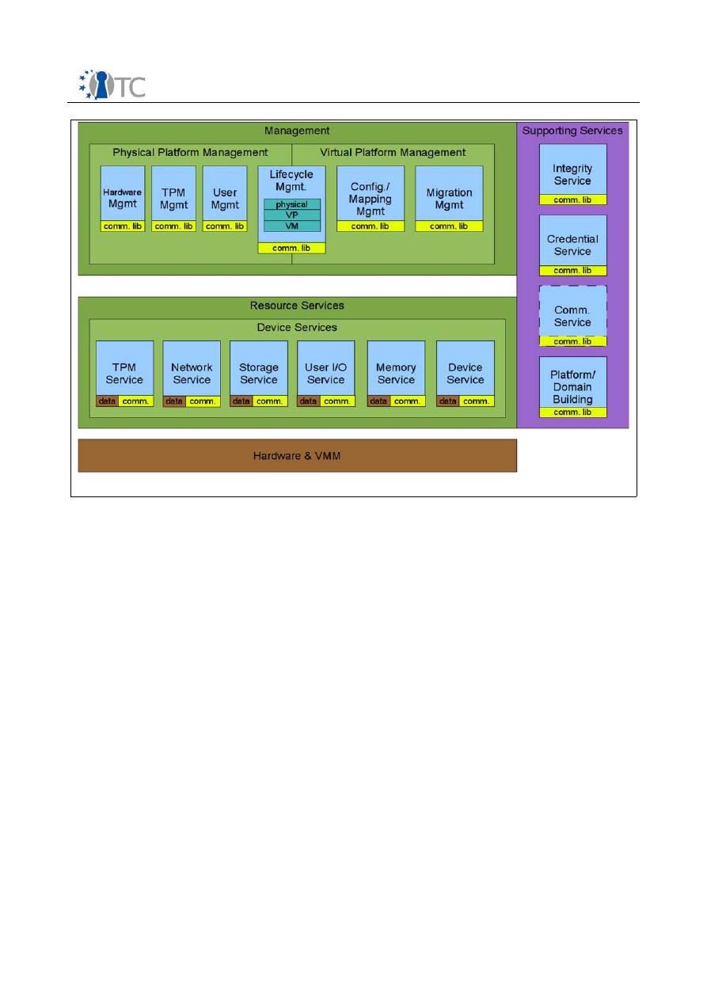

D04.7 VTPM Architecture
Project number
IST-027635
Project acronym
Open_TC
Project title
Open Trusted Computing
Deliverable type
Report
(see p 87/88 Annex 1 - Nature)
Deliverable reference number
IST-027635 / D04.7 FINAL|1.0_Update
Deliverable title
TPM Virtualisation Architecture document
WP contributing to the deliverable
WP04/WP05
Due date
April 2009 (M42)
Actual submission date
29 May 2009
Responsible Organisation
HPLB
Authors
HPLB (David Plaquin, Serdar Cabuk, Chris
Dalton, Dirk Kuhlmann, Philipp Grete)
TUD (Carsten Weinhold, Alexander B
ö
ttcher)
CUCL (Derek Murray, Theodore Hong)
RUB (Marcel Winandy)
Abstract
The report includes a state-of-the-art review
and describes the current state of virtual
TPM implementations, compares ownership
and lifecycle models, discusses trusted
virtual platforms, property based attestation,
and outlines the OpenTC virtual TPM design.
As an UPDATE of D04.7 it is based on the
original document submitted in August 2008,
and expanded by chapter “Implementation
details”.
Keywords
Trusted Computing, Virtualization, TPM
Dissemination level
Public
Revision
FINAL | 1.0 _Update
Instrument
IP
Start date of the
project
1
st
November 2005
Thematic Priority
IST
Duration
42 months

VTPM Architecture
FINAL | 1.0 _Update
Table of Contents
1 Introduction...............................................................................................................4
2 Motivation..................................................................................................................6
2.1 Background and State of the Art............................................................................7
2.2 Types of Virtual TPMs.............................................................................................9
3 Review of current architectures...............................................................................10
3.1 Virtual TPMs on Xen.............................................................................................10
3.2 Virtual TPMs on L4 ...............................................................................................10
3.3 Current Limitations ..............................................................................................11
4 Ownership Model of the Hardware TPM...................................................................13
4.1 TPM Owner ..........................................................................................................13
4.2 Software as TPM Owner .......................................................................................13
4.3 Virtual TPMs and the Basic Management and Security Interface.........................15
5 vTPM Lifecycle.........................................................................................................16
5.1 Virtual TPM manufacturing ..................................................................................16
5.2 Virtual TPM Instantiation......................................................................................18
5.3 Binding Virtual TPMs to VMs.................................................................................21
6 vTPMs and Trusted Virtual Platforms.......................................................................24
6.1 Definitions............................................................................................................24
6.2 Generalization of binding property.......................................................................25
6.3 Bootstrapping a Virtual Platform with a VTPM......................................................27
7 Enhancing vTPM Functionalities...............................................................................28
7.1 Property-Based Attestation..................................................................................28
7.2 Enhanced vTPM Architecture................................................................................29
7.3 Realizing Property-Based Functionality with vTPM...............................................31
8 Design......................................................................................................................34
8.1 Implementation for Xen........................................................................................34
8.2 Implementation for L4/Fiasco and L4Env.............................................................36
9 Summary.................................................................................................................38
1 0 Abbreviations.........................................................................................................39
1 1 Implementation details..........................................................................................40
11. 1Software components and their description.......................................................40
11. 2Packaging and software distribution..................................................................46
1 2 References.............................................................................................................47
Open_TC Deliverable D04.7
2/48

VTPM Architecture
FINAL | 1.0 _Update
List of figures
Figure 1: VTPM State Structure.....................................................................................19
Figure 2: Virtual Platform Layout..................................................................................24
Figure 3: Virtual Platform Services...............................................................................25
Figure 4: Logical architecture of property based attestation enhanced vTPM..............29
Figure 5: Matrix of vPCRs for a vTPM instance..............................................................30
Figure 6: VTPM Architecture on Xen.............................................................................34
Figure 7: VTPM Implementation on L4..........................................................................36
Open_TC Deliverable D04.7
3/48

VTPM Architecture
FINAL | 1.0 _Update
1
Introduction
Numerous core concepts of Trusted Computing (TC) as defined by the Trusted
Computing Group (TCG) were originally conceived to support traditional computing
platforms. For example, it was typically taken for granted that only a single operating
system would be running on each physical platforms. It was also assumed that only a
single Trusted Platform Module (TPM) would be present on a physical platform, and
that this would suffice to extend trust properties from this element to all other
hardware and software components. Another general assumption was that the TPM
would typically be implemented in hardware.
Under these assumptions, it is conceptually straightforward to create a
chain of trust
on TC enabled computing platforms. This chain consists of software components with
known trust properties that are executed in a defined sequence. Trust properties are
represented as the cryptographic digests of all binaries, scripts and configuration files
used to initialize the system. During system initialization, these digests are logged into
dedicated, protected registers of the TPM. The set of register values represents the
system state at the end of the initialization process. By requesting the values of the
register set, remote peers can validate whether the actual, measured configuration of
the system in question corresponds to a setup that is known to be trustworthy.
These mechanisms are well suited to support static configurations, that is, platforms
that provide limited and well-defined functionality for specific purposes. Multi-purpose
platforms such as client PCs or data center servers, however, require a high level of
flexibility. We often want to lock down and protect a specific subset of components
while simultaneously maintaining the option of running the remaining system in an
unconstrained, freely configurable mode. To reconcile requirements of flexibility with
those of policy constrained execution, OpenTC exploits techniques of operating
system virtualization. These techniques allow to concurrently host multiple execution
environments – so-called virtual machines or VMs – while subjecting each of them to a
different security policy. In order to support remote attestation not only for the
hardware platform, but also for each virtual machine hosted by it, however, this
approach essentially requires the equivalent of a dedicated 'virtual' TPM for each VM
instance.
Virtualization of TPM functionality poses a number of challenges. Virtualized TPM
instances become part of the Trusted Computing Base of the hardware platform. They
have to be included the system's integrity verification and bound to its integrity state,
that is, the hardware TPM and its values. Registers and keys of virtual TPMs must be
isolated and protected from hosted VMs to guarantee the trustworthiness of the
attestation information. Further considerations are necessary with regard to the life
cycle of virtual TPMs, their keys and certificates. Yet another set of questions concerns
properties that are required to support migration of virtual machines between different
physical hosts.
This report documents the status of OpenTC's investigation on virtual TPMs as of June
2008. Chapter 2 motivates the need for vTPMs and sketches some implementation
alternatives. Chapter 3 discusses the current state of vTPM components developed for
the Xen and L4 hypervisor layers. Chapter 4 compares the traditional model of TPM
ownership with models required by or possible through virtual TPMs. In chapter 5, we
contrast the life-cycle model of TPM hardware with that of virtual TPMs. Chapter 6
introduces the concept of Trusted Virtual Platforms. In chapter 7, we outline how the
flexibility of virtual TPMs can be improved for better supporting virtual platforms.
Open_TC Deliverable D04.7
4/48

VTPM Architecture
FINAL | 1.0 _Update
Chapter 8 describes the actual vTPM design for Xen and L4, and chapter 9 gives a
summary of this report.
Open_TC Deliverable D04.7
5/48

VTPM Architecture
FINAL | 1.0 _Update
2
Motivation
Operating system virtualization creates a number of challenges for the original
concept of Trusted Computing as defined by the TCG. A first problem arises with
regard to the chain of trust. The trustworthiness of each component in this chain
depends on its own integrity as well as on that of all its predecessors. This assumes a
linear sequence of executed trusted components. In a virtualized scenario, however,
the structure of dependencies between system components becomes more complex,
as multiple virtual machines are hosted simultaneously by a single virtualization layer.
Furthermore, virtual machines are created and destroyed dynamically on demand.
This results in a tree-like, dynamic structure of trust dependencies.
A closely related problem concerns the limited capacity of the hardware TPM on the
physical platform. A v1.2 compliant TPM provides 24 dedicated registers for logging
and tracking the platform state. This was deemed sufficient to support a single
operating system, however, it can not cater for a multitude of (virtual) machines that
can be created and destroyed during a single boot cycle of the hardware platform.
Remote attestation should not only be supported for the hardware platform and the
hypervisor layer, but ultimately for each hosted VM. To achieve this, we essentially
need a dedicated 'virtual' TPM for each VM instance. In theory, a physical TPM could
be extended to directly support multiple concurrent VMs by multiplexing requests of
several VMs while keeping track of their respective contexts. The set of additional
functions and commands necessary have been specified by Goldman and Berger[1].
The authors also describe functions supporting the migration of such contexts
between different physical TPMs. This would effectively allow to relocate virtual TPM
instances between different hosts. However, these suggestions have not yet been
embraced by the TCG, and there exists no hardware TPM chip implementing the
additional functionality and commands. In the remainder of this document, the
expression “virtual TPM” refers only to TPM functionality that is realized as software or
service.
We briefly recapitulate the fundamental features that apply to hardware based TPMs
as well as their virtualized counterparts here. A TPM has two main key pairs. The
Endorsement Key (EK) represents the TPM’s identity, while the Storage Root Key (SRK)
is used to encrypt other keys generated by the TPM (the encrypted blobs
corresponding to these keys are stored outside the TPM). The TPM supports trusted or
authenticated boot by allowing to record “measurements” of the hardware
configuration and software stack executed during the boot process. These
measurements (typically, the SHA-1 hash of executed binaries, scripts, or
configuration files used) are stored in specific TPM registers called Platform
Configuration Registers (PCRs). Adding a hash
(m)
to a PCR is called
extension.
It
requires to use the function
TPM_Extend(i, m)
, which concatenates
m
to the current
value of the
i
-th PCR by computing a cumulative hash.
Based on these PCR values, the TPM provides a sealing functionality that binds
encrypted data to the recorded configuration, and attestation, which reports the
system state as recorded by the TPM to a (remote) party. For attestation, the function
TPM_Quote
is employed, which presents the recorded PCR values signed by an
Attestation Identity Key (AIK)
of the TPM. The AIK plays the role of a pseudonym of the
TPM’s identity EK for privacy reasons. In order to enable other parties to verify the
key's authenticity and its binding to a specific TPM, the AIK must be certified by a
trusted third party called Privacy-CA.
Open_TC Deliverable D04.7
6/48

VTPM Architecture
FINAL | 1.0 _Update
2.1 Background and State of the Art
Software implementations of the Trusted Platform Module (TPM) can be classified as
software TPMs and virtual TPMs.
Software TPMs
(or
TPM emulators
) replicate TPM
functionality in platforms where no hardware TPM is available. Since no hardware
support is provided, TPM emulators do not offer the level of security as required by the
Trusted Computing Group (TCG)[2], and are therefore often used for testing purposes
only.
Virtual TPMs
utilize TPM emulators in ways to virtualize the underlying hardware
TPM. In particular, virtual TPMs are “anchored” to the hardware TPM in addition to
using TPM emulators to provide the necessary TPM functionality. The level of
involvement by the hardware TPM depends on the level of performance and security
requirements.
In [3], two types of virtual TPMs have been defined that observe a different mix of
security and performance requirements. A
software-based virtual TPM utilizes
the
hardware TPM for persistent storage only. In this setting, virtual TPM keys are loaded
to the memory once such a virtual TPM is initialized. A
hardware-based virtual TPM
utilizes
the hardware TPM to permanently store the keys of virtual TPMs (i.e. virtual
TPM keys never leave the hardware TPM in clear-text). The former approach yields
better performance as it does not use the underlying TPM once the keys are loaded.
However, a system compromise can potentially reveal vTPM keys to malicious parties.
The latter approach provides key protection at the expense of limited performance.
Virtual TPM design elements comprise a TPM emulator and mechanisms that bind
virtual TPMs to the underlying hardware TPM. The generalized TPM virtualization
(GVTPM) design by Intel [3] mimics the hardware TPM design by replicating its
components in software. GVTPM uses the underlying trusted virtual machine monitor
(VMM) to isolate the processing units of each virtual TPM assigned to each virtual
machine (VM). Further, hardware TPM-assisted protected storage is used to protect
the virtual TPM non-volatile memory (NVRAM) and keys. In particular, the NVRAM can
be restored and the keys can be used by a virtual TPM if and only if the platform, the
GVTPM environment and the virtual TPM emulator are in the expected state. Between
the two designs proposed in [3], the software-based prototype uses the hardware TPM
only to restore the TPM state and load its keys into the memory. The hardware-based
prototype extensively uses the hardware TPM for key storage at the expense of lower
performance. A central management utility called the GVTPM manager and a virtual
certificate authority manage the complete life-cycle of the virtual TPMs (e.g. creation,
termination), the binding between virtual TPMs and VMs, and virtual TPM keys.
The GVTPM design in [3] lacks mechanisms for virtual TPM migration which can be of
importance, for example, in a data center where VMs can be migrated frequently in-
line with customer requirements. A functional requirement for a migration service is to
migrate the virtual TPM instance along with its VM counterpart. The main challenges in
doing so are (1) preserving the association between the VM and the virtual TPM and
(2) transferring the virtual TPM state (e.g. NVRAM contents, keys, authorisation
sessions) in a confidential and integrity-preserving way.
The virtual TPM design provided by IBM in [1] observes these requirements in addition
to the life-cycle and key management requirements described above. The main design
element there is the virtual TPM manager that orchestrates various virtual TPM
instances that run in the privileged domain (e.g. management VM) on a virtualized
platform. This entity manages the life-cycle of these instances and keeps record of
their VM associations and key hierarchies. Each virtual TPM instance is anchored to the
underlying platform using two sets of integrity measurements: A (read-only) lower set
Open_TC Deliverable D04.7
7/48

VTPM Architecture
FINAL | 1.0 _Update
of PCRs that mirrors the underlying hardware TPM measurements, and a (read/extend)
higher set of PCRs for further measurements regarding the corresponding VM. The
authors also present various alternatives for virtual TPM certificates that can be used
to vouch for the underlying platform configuration in addition to the corresponding VM
configuration.
In [4], secure virtual TPM migration is enabled via a communication protocol between
source and destination virtual TPM managers that transmit sensitive virtual TPM
information (i.e. the virtual TPM state) in encrypted form. The protocol guarantees the
uniqueness and integrity of the migrated virtual TPM by making use of a nonce and a
digest, respectively. However, difficulties arise with virtual TPM certificates as
migration breaks the link between the migrated instance and the underlying platform.
Another shortcoming of the architecture is that the virtual TPM instances all run in the
same privileged domain. An alternative setting, in which each instance resides in a
separate compartment (as in [5] and [6]), can potentially provide better separation of
resources compared to this approach.
In [4], secure migration is coordinated by peer virtual TPM managers that reside in
“service domains” of the source and target platforms. Similar to [1], the locked and
encrypted virtual TPM state that includes virtual TPM authorisation data, VM certificate
store and security policies is transmitted to the target platform alongside the migrated
VM. This way the strong binding between the virtual TPM and the VM is preserved.
The design also employs virtual TPM capabilities such as virtual attestation identity
keys (AIKs) that provide a strong VM identity coupled with a weak identity (i.e. a vAIK
label), which is useful in identifying the VM in security policies. During migration the
VM identity is implicitly migrated with the virtual TPM state.
In all previous designs virtual TPM instances reside on the same privileged domain
along with the management entity. An alternative is to disaggregate these instances
onto separate domains for better resource separation. In [6], the virtual TPM instances
are coordinated using a management VM as before. However, each virtual TPM
instance resides in a separate small compartment and the binding between these
instances and VMs is orchestrated by the management VM. This central authority also
provides a signed secure audit for the VM-virtual TPM pair. This audit includes the
integrity measurements of the VM and virtual TPM images, plus the underlying
platform configuration. This information is then used to obtain a certificate from a
Trust Authority that can vouch for the (virtual) platform integrity. Migration is again an
open problem problem as it invalidates the signed digests. Another solution is
presented in [5], in which each virtual TPM instance runs on a MiniOS domain.
As for implementation, a Xen-based virtual TPM prototype has been introduced that
enables VMs to gain access to virtual TPM instances of their own [7][8]. The design is
based on the Intel [3] and IBM [1] virtual TPM designs. In particular, a centralised
virtual TPM manager sits in the management domain (i.e. Dom0) of the Xen platform.
This entity coordinates the life-cycle of the virtual TPM instances and their associations
with the VMs. All virtual TPM instances reside in Dom0. The communication between
the instances and the VMs are enabled using the Xen split driver model [7][8]. This
prototype is still in the development phase and does not provide mechanisms to
anchor virtual TPMs to the underlying hardware TPM. Therefore, Xen virtual TPMs are
closer to TPM emulators that true virtual TPMs.
Open_TC Deliverable D04.7
8/48

VTPM Architecture
FINAL | 1.0 _Update
2.2 Types of Virtual TPMs
Summarizing the discussion in the previous section, there are three principle ways to
implement virtual TPMs:
●
Providing vTPM Functionality as Shared Service:
This model corresponds
to the current implementation in Xen [7] described in the next section. All
Virtual TPM instances are implemented by one dedicated vTPM service (the
vTPM_manager daemon) hosted in Xen domain0. The service directs TPM
requests to the right vTPM instance in a multi-threaded manner. The states and
secret data of all virtual TPM reside in the memory space of the central vTPM
service, which is responsible for protecting the secret data. The vTPM service is
also responsible for forwarding the reply to the right caller. In this model,
compromising the vTPM service could result in compromised vTPMs and/or the
binding between a vTPM and its corresponding VM to be broken.
●
In-Guest Implementation of vTPMs:
This approach uses the kernel of the
virtual machine as the execution environment for the vTPM to provide vTPM
functionality to applications running in a virtualized guest operating system.
With regard to separating states and secrets of multiple concurrent vTPM
instances from each other, it provides a better isolation than a central service
(the level of isolation is similar to that of different VMs). However, it is
impossible to protect vTPM secrets from the kernel itself. It is also hard to
protect it from users with root privileges. An in-guest-implementation would
have to guarantee that even administrators can not access vTPM secrets. This
requirement that can only be met by hardened operating systems. but even
with a hardened guest OS, there remains a conceptual difficulty with this
approach. Trusted Computing as defined by the TCG assumes software to be
measured
before
it is executed. An in-guest implementation, on the other hand,
depends on the kernel and vTPM service being executed before the first value
can be logged into a vTPM register.
●
Disaggregated vTPMs
: This model assumes each virtual TPM to run in its
own, dedicated virtual machine. While a full-blown operating system could be
used to host the vTPM, it is preferable to implement it as a hypervisor thread or
task that runs directly on top of the virtual machine monitor (VMM). On L4, this
would be implemented as a microkernel task. For Xen, a miniOS based
implementation can be used [5]. In both cases, the vTPM security interface
should be minimal and prevent attacks on secrets and sensitive internal states
(for details see Section 5.2). For generating and protecting individual
cryptographic keys, vTPM instances may implement different strategies. For
instance, keys can be generated as software keys in the vTPM and protected by
software mechanisms. Alternatively, the vTPM could delegate the key
generation and protection to a physical security module, e.g., the hardware
TPM.
Disaggregation provides better isolation between vTPM instances than a centralized
service. The vTPM is protected from its corresponding virtual machine, and
compromised or malfunctioning vTPM does not have an impact on other vTPM
instances. Our working hypothesis is that the disaggregated model combines the
advantages of the service and in guest model while avoiding their drawbacks.
Open_TC Deliverable D04.7
9/48

VTPM Architecture
FINAL | 1.0 _Update
3
Review of current architectures
3.1 Virtual TPMs on Xen
Virtual TPM support on Xen has been described by Berger et al.[1]. In their
architecture, the virtual TPM consists of a vTPM root service which can spawn and
manage new vTPM child instances.
As with all other physical devices under Xen, TPM device access is provided to guests
domains (VMs) through a split front end / back end device driver pair. In the guest
domain, the front end driver appears as the standard Linux
/dev/tpm0
device. The
corresponding back end driver is part of Xen domain0, a privileged virtual domain that
controls all hardware devices, and appears as a device named
/dev/vtpm
. The front
end and back end of the driver interact through Xen’s standard
xenbus
device
communication bus.
The vTPM root instance is implemented as a user space process in Xen domain0. It
multiplexes access to the hardware TPM, implementing the standard TPM 1.2
command set plus a small number of extended commands to manage new vTPM child
instances and to migrate vTPMs and their keys.
The values of the low-order PCRs (0-8) are mapped through directly from the hardware
TPM to all of the virtual TPM instances. They are read-only in the corresponding guest
domains. The high-order PCRs (9-15) of a vTPM are available for the corresponding
guest domain to record integrity measurements. This arrangement permits remote
attestors access to PCR register values in the underlying hardware TPM in order to
verify the integrity of the hypervisor and the vTPM itself as well as the integrity of the
guest virtual machine.
Anderson et al. [5] realize the implementation of vTPM instances as isolated domains
instead of running all vTPMs in one privileged VM. Except for the implementation, they
provide no new aspects of the vTPM, but refer to [1].
GvTPM [3] is an architectural framework that supports various TPM models and
different security profiles for each VM under the Xen hypervisor [9]. The authors
discuss both a software-based and hardware-based vTPM model. The former
generates and uses cryptographic keys entirely in software, whereas the latter uses
the keys of the physical TPM. GvTPM is not limited to TPM functionality and may be
generalized to any security co-processor.
3.2 Virtual TPMs on L4
3.2.1 TPM Drivers
Basic TPM access on L4 is provided by the STPM service that has been developed by
TUD. In essence, STPM is a TPM driver with a generic interface that abstracts all I/O to
the TPM of the underlying platform hardware. It supports a variety of older version
1.1b TPMs as well as all version 1.2 TPMs that are compatible to the TPM PC Client
Interface Specification [10]. The interface offered to the clients is similar to a Linux
character device, hence expects a raw TPM command blob as input. This also applies
to TPM responses, which are relayed to the client as an uninterpreted byte array.
Although STPM can support multiple clients, it does virtualize a hardware TPM (i.e., all
Open_TC Deliverable D04.7
10/48

VTPM Architecture
FINAL | 1.0 _Update
clients must cooperate in order to safely share the physical TPM). Nevertheless, the
STPM service is the basis for TPM access on L4 on which higher-level software layers
built upon.
3.2.2 Minimalist TPM Multiplexer ”Lyon”
The TCG specified the Trusted Software Stack (TSS) as a convenient standard API for
accessing TPM functionality. The TSS multiplexes the limited resources of the
underlying TPM so as to allow concurrent access by multiple applications. Examples
for such a TSS are
TrouSerS [11]
and Infineon’s
IFX-TSS [12]
. However, these TSS
implementations are quite complex, supporting hundreds of API functions that have
not been ported to run directly on the L4 platform. Instead, we decided to implement a
TPM multiplexer service called
Lyon
that provides just the most basic functionality as
detailed in the following:
●
Sealed storage similar to
TPM_Seal()
and
TPM_Unseal()
●
Attestation of the platform state based on
TPM_Quote()
●
A
TPM_Extend()
-
like function that allows to report measurements.
This API was found sufficient for providing the essential set of Trusted Computing
related functions required by most applications. In particular, it supports to build
simple and lightweight applications on top without unduly burdening the underlying
Lyon
service with unnecessary Trusted Computing functionality. Importantly, the
interface is powerful enough to enable richer APIs on top of it, including a software-
implemented virtual TPM that could be used by legacy software.
The OpenTC Basic Management and Security Interface (BMSI) was designed with
similar complexity considerations in mind. We could therefore reuse Lyon as a back-
end for the L4 implementation of the BMSI.
3.3 Current Limitations
The approach of mapping the lower PCRs of the hardware TPM to the virtual PCRs of
the vTPM [1] is limited with regard to support migrating a VM and its corresponding
vTPM. Migration is currently only possible between platforms that are exactly identical
with regard to their hardware and hypervisor. Migrating to a platform with different
hardware or hypervisor would render data sealed to the vTPM inaccessible: although
the new target platform might provide identical security properties as the original one,
the integrity metrics would differ. This is a quite severe limitation for migrating virtual
platforms.
The approach described in [1] also lacks differentiated strategies for key generation
and usage. Some IT environments demand cryptographic keys to be generated and
protected by the hardware TPM while some VMs would benefit from the performance
improvement of using software protected keys. Some VMs might be migratable while
others must not be migrated. For instance, GVTPM [3] realizes flexible key types with
different vTPM models. However, the decision on which model to use when the vTPM
instance is created and assigned to a VM has to be taken at instantiation time. This
decision can not be changed later, for example, when the policy of the IT environment
changes.
Finally, by emulating the functionality and behavior of the real TPM, a virtual TPM also
inherits limitations of the hardware TPM itself, for instance, sealing and attestation to
Open_TC Deliverable D04.7
11/48

VTPM Architecture
FINAL | 1.0 _Update
hash values of binary program files (binary attestation and sealing). One consequence
of this is, for instance, that the VM can not access cryptographic keys and the data
protected by those keys of the (v)TPM anymore after performing an authorized update
of software since the integrity measurement values have changed.
Open_TC Deliverable D04.7
12/48

VTPM Architecture
FINAL | 1.0 _Update
4
Ownership Model of the Hardware TPM
4.1 TPM Owner
The cryptographic operations implemented in TPMs are based on a hierarchy of
cryptographic keys. These keys are used to encrypt user data and to issue various
types of signatures such as quotes for remote attestation. The key hierarchy in a TPM
can be exchanged by the user by creating a new tree of keys protected by the so-
called storage root key (SRK) at its root. Creating a new key hierarchy is part of taking
ownership of the TPM. As there can be only one (randomly generated) SRK associated
with a TPM, creating a new SRK invalidates the previous hierarchy, that is, all keys that
were bound to this TPM before.
Taking ownership of a TPM can therefore lead to denial of service if initiated by an
unauthorized user. To prevent this, the concept of a TPM owner as defined by the TCG
requires privileged TPM operations such as
TPM_TakeOwnership()
to be authorized by
means of a secret owner authorization value. After ownership has been taken, owner
authorization is also required during normal use of the TPM for certain other
operations. For example, it is not only required to create attestation identity keys
(AIKs) and to set valid migration targets for migratable keys, but also for commands
such as
TPM_CreateCounter()
or
TPM_NV_DefineSpace()
.
One major requirement for TPM virtualization is that the integrity and/or confidentiality
of the internal state of a virtual TPM (vTPM) must be maintained. In the case of a
purely software implemented vTPM, this includes the endorsement key (EK), the SRK,
and other non-volatile internal state such as monotonic counter values. The
virtualization layer can provide the required secure persistent storage for this data by
sealing it to the execution environment of the vTPM software implementation. This
means that the vTPM state will be encrypted with a storage key generated and
protected by the physical TPM.
Migration a vTPM instance might therefore require the owner of the physical source
TPM to authorize a specific physical destination TPM for the key used to protect the
storage of the virtual TPM. Creating a new vTPM instance might also include creating a
new counter in the physical TPM of the source platform in order to prevent replay
attacks, which also requires owner authorization
For vTPM migration, users of a vTPM therefore rely on the cooperation of the owner of
the physical TPMs residing on the source and target platforms.. However, owners of
physical TPMs and those of vTPM instances bound to them might not be the same
person. For example, the administrator in a data center might be the owner of the
physical TPM built into a server, whereas VMs and vTPM instances hosted on this
server might be owned by customers. Some of these customers may not want to trust
the administrator with respect to vTPM integrity; for instance, if a target platform for a
migratable key needs to be authorized or if a customer defined security policy forbids
to make a specific remote machine a valid migration target. We discuss how to
accommodate for this requirement in the following section.
4.2 Software as TPM Owner
Ideally, the owner of the physical TPM should not need to be trusted in order to trust a
vTPM built on top of it. In practice, however, this is infeasible: the physical TPM would
Open_TC Deliverable D04.7
13/48

VTPM Architecture
FINAL | 1.0 _Update
be rendered useless, as no owner protected commands could be used. A possible way
to solve this dilemma is to take owner authority out for the physical TPM of the hands
of a physical person such as the administrator, and let software, namely, the trusted
virtualization layer (TVL), ”own” the TPM instead. This approach can be motivated by
the fact that the TVL has to be trusted in any case, and access to owner authorized
functionality can effectively be enforced by binding authorization secrets to a specific
PCR configuration that correspond to a trustworthy TVL.
4.2.1 Protecting Owner Authorization Data
Knowing the owner authorization data does not allow for unlimited access to all
secrets and capabilities of a TPM. For example, usage of certain storage and signing
keys in the hierarchy can be restricted by means of per-key authorization data.
However, any user with owner access can authorize the migration of a key currently
loaded into the hardware TPM – an operation that can compromise a vTPM whose state
is protected by that key. Our approach to reduce trust in external users such as
administrators is to mediate all owner-authorized operations through software by
making the owner authorization data exclusively available to the TVL. The TVL needs
to provide appropriate interfaces to handle vTPM instances on behalf of their
respective owners.
To ensure that the owner authorization data is kept secret, taking ownership of the
physical TPM must be done automatically (e.g., as part of the installation procedure).
The new owner authorization data should be a hard-to-guess random nonce that is
being kept secret by the TVL. This authentication data must be stored persistently
such that only the TVL is able to access it; for example after a reboot. This is achieved
using the sealing and unsealing functionality of the physical TPM. Note that no owner
privileges are required for unsealing data, so the TVL can pass a sealed blob
containing the authorization secret that was retrieved from a storage medium to the
TPM in order to obtain owner privileges during its initialization phase.
4.2.2 Implications of Public SRK Authorization Data
For practical reasons, the TVL must be able to unseal the owner authorization data
without knowing any additional secrets. This implies that the SRK needs to be
accessible using a well-known password. This requirement is acceptable, because all
cryptographic keys and sealed data below the SRK are locked to specific PCR
configurations and are optionally protected by additional authentication values.
Typically, authentication data is needed whenever a new TPM object such as a
protected key is created. The TCG specifications forbid to send the authentication data
in the clear, though. Before it is transmitted over the LPC bus, it must be encrypted
using the authentication data of its immediate parent entity. The TPM specification
requires the encryption scheme to be XOR, with the SHA-1 hash sum of the parent
entity’s authentication data and a rolling session nonce:
child_auth
enc
:= XOR( child_auth, (parent_auth || session_nonce))
An attacker with physical access to the platform running the TVL might try to obtain
the cipher text by listening on the LPC bus using appropriate equipment. Because our
approach requires the authentication data of the SRK to be public , he might be able
to learn about the plain text authentication data of direct child keys, provided he can
guess the session nonce. It is conceivable that the attacker could even learn about all
Open_TC Deliverable D04.7
14/48

VTPM Architecture
FINAL | 1.0 _Update
authentication data for keys associated with the physical TPM.
TPM-equipped computers as specified by the TCG are not required to withstand
hardware attacks. However, as we do not make assumptions about the
trustworthiness e.g. of administrators of physical servers e.g. In a data center, we
emphasize that this kind of hardware based attack is feasible. The quality of the
session nonces, which are partly generated by the software using the TPM, are
required to be of high quality so as to make guessing them as hard as possible.
4.3 Virtual TPMs and the Basic Management and Security Interface
In OpenTC, the Basic Management and Security Interface (BMSI)[13] was designed
such that a software-implemented vTPM can be built on top of it. One of its purposes is
to provide the mediation of owner related TPM functionality as described above. In
other words: the BMSI is a practical realization of the software-based vTPM
architecture described in this chapter.
We will now discuss how the properties and the trustworthiness of this interface can
be communicated in a remote attestation scenario. In order to trust the BMSI and the
keys in the physical TPM, a remote party must know the identity of the owner of the
physical TPM. The remote party should only trust the BMSI if the BMSI itself took
ownership of the platform. With the owner authorization data being sealed under its
own configuration as reflected in the PCRs, the BMSI can also determine which entity
(i.e., software stack) originally performed the sealing operation using TPM
functionality. The verification procedure to determine the creator of the sealed data is
done in two steps:
1.
Determine Platform:
Apart from checking the PCR configuration at the time
TPM_Unseal()
is called, the TPM also ensures that it never releases data unless
the sealed blob has originally been created by itself. Thus, the BMSI implicitly
knows that the data has been sealed on the same physical platform once the
TPM returned the unsealed data.
2.
Determine Creator PCR:s
The TPM captures the current PCR values at the
time of the
TPM_Seal()
operation and includes them in the sealed blob that is
created. The TPM does not use this creator PCR configuration itself, however, it
verifies its integrity. After unsealing the data, the BMSI can extract the creator
PCR values from a copy of the sealed blob and verify them using known-good
values.
Using this procedure, the BMSI can identify the entity that sealed the owner
authorization value. Thus, it can determine with certainty whether or not it took
ownership of the TPM itself. Alternatively, the BMSI might also decide to trust in the
integrity and secrecy of the obtained owner secret if the creator PCR configuration
matches a platform installer known to be trusted.
A remote party can learn about the the identity of the challenged platform in a
successful remote attestation. For example, the BMSI could just refuse to start up if it
finds an owner authorization to be invalid; a reply to a remote attestation request then
carries the implicit information that owner functionality is only accessible to the BMSI.
The very same protection scheme that is used to protect the owner authorization data
can also be used to keep other authorization values such secret (e.g., for monotonic
counters and non-volatile storage in the TPM).
Open_TC Deliverable D04.7
15/48

VTPM Architecture
FINAL | 1.0 _Update
5
vTPM Lifecycle
Hardware TPMs are subjected to a defined life cycle that comprises stages of
manufacturing, maintenance, usage and eventually destruction. In principle, this life
cycle also applies to virtual TPMs, however, the security measures that apply to each
stage are different for vTPMs. Furthermore, the actual measures can depend on the
way a virtual TPM is implemented.
This chapter discusses how the life cycle for hardware TPMs can be mapped to the
disaggregated vTPM section model
as chosen by OpenTC and introduced in section
2.2Our working hypothesis is that the disaggregated model leverages the respective
strengths of the two other ones while avoiding some of their difficulties.
5.1 Virtual TPM manufacturing
The first step in the vTPM lifecycle is its creation. While this process is well understood
and defined for hardware TPMs, additional parameters and security measures have to
be taken into account when creating a software TPM. We will first describe a
theoretical HW manufacturing process which we will then transpose to the
peculiarities of the vTPM.
5.1.1 Process for Hardware TPMs and Computing Platforms
Physical TPMs must protect cryptographic secrets (symmetric and asymmetric keys)
from a computer CPU and DMA capable devices. They also have to withstand a certain
level of physical attacks. TPMs must only allow a specific set of operation on these
secrets. Usually, this is achieved by using a separate processing engine (processor)
which implements the TPM functionalities. TPMs come with dedicated processors and
approved firmware implementing the TCG specification. All hardware TPMs implement
the same logic and can be considered identical from a functional point of view.
In the last stage of the manufacturing process, the TPM obtains its life long identity: its
Endorsement Key (EK). The specification allows the TPM to generate this key itself
during the first power up. Alternatively, the manufacturer can create and inject the
key into the TPM. Whichever solution is chosen by the manufacturer, the end result
should always be:
●
The TPM has a statistically unique asymmetric key pair stored for its whole life
in its non-volatile memory (Endorsement Key, EK).
●
The TPM manufacturer creates a certificate for this EK. This certificate vouches
for the genuineness of the TPM and its identity.
At some later stage, TPMs are integrated with a computing device by a platform
manufacturer. 'Integrated' means that the TPM is physically 'bound' to a hardware
platform – soldered, glued and attached by whatever other means that are deemed
appropriate to make the TPM and the platform hard to separate. The platform
manufacturer publishes that (and how) a specific TPM has been integrated with (bound
to) a specific type of physical platform. This enables a remote party to extend its trust
in the TPM to the physical platform and, ultimately, to the software running on this
platform. The stronger the binding, the more confidence can be put in the this 'chain
of trust'.
Open_TC Deliverable D04.7
16/48

VTPM Architecture
FINAL | 1.0 _Update
5.1.2 Creating a new Virtual TPM
Analogous to hardware TPMs, Virtual TPMs are also dedicated software implementing a
specific behavior as defined by the TCG specification. However, the main difference is
that Virtual TPMs are not executed on a separate processor. They are effectively
implemented as software running on the main CPU with all other software. The
protection offered by Virtual TPMs is therefore crucially dependent on the security and
isolation properties of the vTPM execution environment. The manufacturer of the
Virtual TPM will have to take into consideration not only the actual code of the Virtual
TPM, but also the code of the whole environment the vTPM depends on. Additionally,
the vTPM must include code to protect its secrets both at runtime (isolation from other
software running on the platform) and in standby mode (secure offline storage of the
secrets).
This, of course, makes the concept of “Manufacturer” more ambiguous for a Virtual
TPM as it could involve the entities who wrote the vTPM code, the underlying code
system codes, as well as the system administrator, the platform manufacturer, the
TPM manufacturer, etc... For our discussion, we will call the manufacturer of a vTPM
the entity that is able to vouch for the vTPM security properties. In other word, the
vTPM manufacturer is the entity that is willing to vouch for the trustworthiness of a
vTPM materialized through the issuing of a digital certificate.
For the runtime protection, we will assume that we have a trusted hypervisor that uses
hardware support in CPUs to provide strong isolation between running processes
(which in the case of Xen are domains, and in the case of L4 are tasks). For the offline
protection, we assume that the Virtual TPM is provided with an interface providing a
protected storage integrated with the chain of trust such as the one defined in the
BMSI[13]. We will discuss this integration in subsequent chapters dealing with Trusted
Virtual Platforms and vTPM design.
Similar to the manufacturing process for hardware TPMs, we consider two cases for a
Virtual TPM to obtain its identity:
●
The Virtual TPM generates its own Endorsement Key, which will get certified by
the manufacturer
●
The Virtual TPM manufacturer inserts an externally generated key
These cases are discussed in the following two sub-sections.
5.1.2.1 vTPM Generated Endorsement Key
In this solution, the first time a vTPM is instantiated, it generates its own endorsement
key pair and seals its private part using an existing security interface (such as the
hardware TPM, the BMSI, or the HIM). In order to make the vTPM persistent, the result
of this operation must be stored on a non-volatile storage (such as a hard disk). The
result is encrypted by the underlying layer, so we do not need special provisions for
securing the data. The encrypted chunk of key data will be referred to as the vTPM
Non-Volatile Blob (vTPM-NVB). The vTPM-NVB must be provided to the vTPM at each
instantiation.
After generating the EK, the manufacturer needs to certify it. Again, there are two
options:
●
Direct Certification:
The manufacturer directly reads the public part of the EK
that was generated by the vTPM and issues a certificate for it. This requires for
Open_TC Deliverable D04.7
17/48
VTPM Architecture
FINAL | 1.0 _Update
the manufacturer to have full understanding in and control over the
environment that was used to instantiate this vTPM. This solution is probably
more appropriate for corporate scenarios where platforms are under the control
of a centralized entity.
●
Indirect Certification:
In this case, the vTPM needs to “convince” the
manufacturer of its genuineness before the manufacturer accepts to issue a
certificate. To do so, the vTPM uses an existing security interface to obtain a
signature of its EK public part and the current platform configuration. This
operation (quote operation) can again be provided by an underlying TPM or the
BMSI. The manufacturer can then verify this signature, verify that the integrity
of the environment is suitable for creating a vTPM and protecting its secrets. If
these conditions are met, the manufacturer can issue a certificate for the EK of
this vTPM
1
.
5.1.2.2 Manufacturer Generated Endorsement Key
Here, the vTPM manufacturer generates the vTPM EK using its own computing
resources. He sends this key to the destination platform that will later instantiate the
vTPM. In effect, the vTPM manufacturer is creating the vTPM-NVB “a priori” for a
specific platform. This is only feasible if:
●
The manufacturer has appropriate means to identify the platform and to
validate its trust state.
●
The security interface provided to the vTPM provides a sealing function that
accepts created encrypted blobs that were created remotely (similar to the
TPM_UnBind()
function ([14], Section 10.3)
●
The key used by the security interface to protect the blobs is itself sealed to the
integrity metrics of the environment the vTPM will be executed in.
If the manufacturer can verify each of these assertions, he generates both the vTPM-
NVB and the corresponding vTPM EK certificate. As above, the vTPM-NVB can be
stored by the manufacturer on a non-volatile storage (such as hard disk) which will be
made accessible to the vTPM code at the time of its instantiation.
Both cases are similar with regard to using the security interface. We will therefore
limit our discussion to the first case only.
5.2 Virtual TPM Instantiation
A vTPM instance is typically assigned to one specific virtual machine in order to
protect sensitive data for this VM, and other VMs must not be able to observe or
modify the state of this vTPM instance. This mutual isolation is provided by the
hypervisor layer; a vTPM is ultimately nothing but a piece of software that is executed
under its control. If the hypervisor can not be trusted, a vTPM running in its context
cannot be trusted either.
Care must therefore be taken that the vTPM can only exist in the context of this
hypervisor system and the physical TPM assigned to it. This has to be validated by
1 As a variant, the key used by the underlying security interface could be part of the
manufacturer PKI. In this case, the security interface can play the roles of the manufacturer
for the purpose of issuing vTPM EK Certificate. Thus, this removes one step involving the
manufacturer.
Open_TC Deliverable D04.7
18/48
VTPM Architecture
FINAL | 1.0 _Update
remote parties who want to estimate the trustworthiness of the vTPM, and the physical
TPM is employed to provide the necessary attestation information.
The binding between hypervisor, physical TPM and virtual TPM must be performed
during vTPM instantiation. The setup of the vTPM ensures the binding to the
hypervisor as described in the following subsection. We then describe the binding of
the vTPM to its associated VM.
5.2.1 vTPM Startup
Decryption
Once a TPM has been created as described in section 5.1.2, it needs to be instantiated
for the VM it will be attached to. Similar to their hardware counterparts, vTPMs need to
maintain some persistent state information. Some of this data is security sensitive,
while some of it is public. We refer to it as
VTPM State Structure
(VTPM-SS)
.
The
security sensitive data (VTPM-NVB, see ) is encrypted with a key that is protected by
the underlying security interface.
The VTPM-NVB consists of two sections. The first one contains the private part of the
vTPM endorsement key
(see chapter 5.1.2.2). This section constitutes the “essence” of
the vTPM identity and remains immutable for its lifetime. The second section contains
the private data the vTPM requires to perform its operations. This data will be updated
by the vTPM throughout its life time. Examples are the private part of the Storage Root
Key and the Owner Authorization secret that will be inserted once the ownership of the
vTPM has been taken. The vTPM can use this section to store any other data it requires
for its operation (for instance, authorization data of a TPM key).
Contrary to the VTPM-NV
B
section
,
the
VTPM Non-Volatile Data or
VTPM-NV
D
structure
stores non-confidential information, such as the public parts of the vTPM Endorsement
Key the Storage Root Key. While this data is not secret, its integrity is crucial for the
proper operation of the vTPM. The VTPM-VNB structure must therefore include a
cryptographic link with the VTPM-NVD to verify and guarantee data integrity. This link
Open_TC Deliverable D04.7
19/48

VTPM Architecture
FINAL | 1.0 _Update
is implemented as a cryptographic digest of the VTPM-NVD structure.
How a vTPM is provided with its VTPM-SS is implementation specific. After obtaining
the corresponding data, the vTPM uses functionalities provided by the underlying
security interface to decrypt the VTPM-NVB part. Note that the security interface
should successfully complete this operation only if all integrity requirements for the
vTPM instantiation are met (successful integrity checks of the hypervisor, the security
service vTPM etc). As explained in section , the integrity information should also
include the binding information of the vTPM.
Once the VTPM-NVB has been decrypted, the vTPM can verify the integrity of the
public structure VTPM-NVD. If the hash of the VTPM-NVD structure corresponds to the
hash present in the VTPM-NVB, the vTPM accepts the data as representing its initial
state on which all further operations will be based.
Initialization of Virtual PCRs
Values in their lower PCRs of hardware TPMs are set at boot time by the Core Root of
Trust for Measurement (CRTM). For vTPM, the equivalent of CRTM measurements are
provided by the set software components that are involved in the instantiation of the
vTPM and in providing its corresponding execution environment.
Establishing trust in CRTMs is a non-trivial exercise, even if we are just dealing with
hardware TPMs. From the user's point of view, this trust will typically stem from his
knowledge that both the hardware TPM and the CRTM are integrated with the platform
in front of him (the CRTM for the hardware TPM ideally resides in a read-only section of
the platform BIOS). One function of the CRTM is to measure itself prior to measuring
any other software components and to log the result into the first register of the TPM
(PCR0). The user can not actually verify this value, however, unless the platform
vendor has published the expected result the CRTM self-measurement. In theory, this
could be facilitated by platform and conformance certificates. In practice, however,
these credentials have yet to be produced by the platform vendors. At this stage in
time, the values in the PCR0 of hardware TPMs are completely arbitrary from the
user's perspective. They are a convenient way to distinguish between different
implementations and versions of CRTMs, but they neither provide security nor
establish trust.
If we want to establish
implicit
trust in the CRTM of a vTPM, we have to bind and start
the vTPM and the VM in a special way that is discussed in section 5.3. Alternatively,
the CRTM of the vTPM can create an explicit link between itself and the CRTM of the
VM attached to the vTPM. To do so, it requires the privilege to take a measurement of
the CRTM of the VM and extend the PCR0 of the vTPM with this value. In such a case,
the PCR0 no longer contains an arbitrary value, but the CRTM integrity measurement
of the VM in question.
Existing vTPM solutions such as [1] propose to directly map the lower PCRs of the
physical TPM to the lower vPCRs of the vTPM. These PCRs contain measurements that
concern the hardware platfom, its BIOS, bootloader, and hypervisor. The direct
mapping of physical (TPM) to virtual (vTPM) PCRs is a straightforward method to
enable (remote) integrity verification of the underlying hypervisor, using a (remote)
attestation procedure with the VM and its vTPM. However, it is limited as it makes the
following assumptions:
●
The vTPM must be given access to a dedicated AIK (attestation Identity Key) in
the hardware TPM.
Open_TC Deliverable D04.7
20/48

VTPM Architecture
FINAL | 1.0 _Update
●
The vTPM is the only entity able to use this dedicated key.
These requirements must be met to masquerade a remote attestation result that
coming from the hardware TPM as one that appears to come from the vTPM (and only
this specific one).
The approach requires that all vTPM keys (that can be certified) have to be stored in
the hardware TPM, which limits the vTPM model that can be implemented. All vTPMs
share the same endorsement key, which makes migration in certain use cases
impossible. Furthermore, the direct mapping of physical to virtual PCRs establishes a
linkage to the underlying hardware platform that is based exclusively on cryptographic
digests of specific binary components and configuration information. As outlined
earlier, this inhibits to migrate virtual machines between platforms with that provide
identical security properties by means of different implementations.
To address this problem, indirect mapping through property providers [15] acting as
trusted third parties has been suggested. On its creation, the vTPM instance requests
the physical TPM to read out all relevant PCRs, i.e., from PCR0 to PCRn. Then each
property provider is invoked to map these values according to his strategy.
PropertyProvider_A
could map the values of PCR0,...,PCR7 directly to
vPCR0:A,...,vPCR7:A, whereas
PropertyProvider_B
could choose to digest all the
physical measurements into one single vPCR. Finally,
PropertyProvider_C
could
translate the PCR values into abstract properties (cf. [16]) using certificates [17][18]
[19].
This allows to simultaneously support different mappings, and by defining a policy for
each vTPM instance, it becomes possible to control which mapping will be actually
used. For instance, to support availability of sealed data after migration, we can define
to use the certificate-based property provider when the VM wants to seal data to
vPCR0,...,vPCR7. Further details on property based attestation and sealing are
discussed in chapter 7.
5.3 Binding Virtual TPMs to VMs
The implementation of a vTPM mandates to check and safeguard its integrity as well
as that of its execution environment. We also have to isolate it from other software
running on the platform as well as possible. Ultimately, we want assurance that
information reported by the vTPMs actually reflects the integrity state of its associated
VM, and that the policy of a VM is enforced by on its behalf by the associated vTPM.
This requires to establish and maintain a proper binding between vTPM and its
associated VM. To stay in line with the spirit of the TCG specification, a virtual TPM
needs to have the following properties:
●
An exclusive communication channel between the vTPM and its VM. To prevent
impersonation, no other components must be allowed to send or receive
communication transmitted over this channel.
●
The vTPM must instantiated, started and ready to be connected before its
corresponding VM is started. Since. the vTPM stores the VM's integrity , it must
ready to receive the very first measurement of the VM's own CRTM before the
CRTM performs the first
TPM_Extend
command. Failure to meet this
requirement would compromise the chain of trust for the guest VM.
●
The vTPM must only “exist” if and as long all of the above conditions (including
Open_TC Deliverable D04.7
21/48

VTPM Architecture
FINAL | 1.0 _Update
this one) are enforced and have been enforced since the vTPM has been
started.
5.3.1 Protected communication channel
The protocols defined by TCG to communicate with a TPM guarantee the integrity of
the information sent and received by the use of cryptographic means. The protocols
provide a certain level of confidentiality for the data transmitted. From a theoretical
point of view, we could limit the requirement on the communication channel between
a VM and its vTPM to be writable only by the VM while being readable by any other
entity. Confidential communication between a VM and its associated vTPM has to be
provided, though, if the owner of the hardware TPM considered to be untrusted.
Protected communication between the VM and its vTPM should be operational and at
any given time. Even temporarily unavailability should be interpreted as a change in
the integrity of the vTPM environment.
The mechanism used to bind the vTPM with its VM part of the conditions for the
existence of the vTPM. Whether based on cryptographic protocol or simply enforced by
the overall design of the system, the nature and properties of the protection
mechanism must therefore be captured as part of the integrity metrics of the vTPM
environment.
5.3.2 Boot Order and Initial Measurements
Virtual PCRS of the vTPM must genuinely represent the current state of the VM. The
vTPM must be capable to respond to
TPM_extend
onwards from the point in time when
its associated VM is being activated. Before this VM is started, the vTPM must have
been instantiated – all its internal state has been initialized, and the communication
channel must be up and running.
This can be achieved by the systemic and mandatory creation of a vTPM for every
newly created VM. The subsystem launching the VM would first instantiate a vTPM
using a fresh and unique VTPM-NVB, then allocate the resources for the VM, sets up its
communications channels, and finally starts the VM. The VM's CRTM can be
instrumented to abort the boot process if it can not interact with the vTPM. This
requires to measure and report the integrity state of the VM's CRTM to the vTPM's
PCR0. Measurement and invocation of the
TPM_extend
command would be performed
by the VM's CRTM, that is, the virtual boot-loader.
Initialization events preceding the actual launch of a particular VM (including the setup
of its communication channel to the vTPM as well as the CRTM of the VM) must be
captured, measured and reported to the vTPM, as well as mechanisms used to enforce
the boot order of the vTPM and its VM. They are part of the conditions of the vTPM's
existence.
5.3.3 Conditional Existence
The existence condition stipulates that a vTPM must always have the properties the
manufacturer vouches for. If these properties can not be guaranteed (even
temporarily), the vTPM should simply not exist. This requirement must be addressed
within the context of a Trusted Virtual Platform.
A vTPM ceases to “exist” if it can not access the cryptographic material needed to
Open_TC Deliverable D04.7
22/48

VTPM Architecture
FINAL | 1.0 _Update
perform its operations . This includes the protected sections of the VTPM-VNB and any
other keys and secrets generated or loaded by the vTPM since its instantiation.
Although it is sufficient to withdraw access to these secrets, it might be easier for
practical implementation to terminate its existence by destroying the whole vTPM
instance Again, the mechanisms used to enforce the conditional creation and
destruction of the vTPM must be captured as integrity measurements of the execution
environment the vTPM. This requirement is “circular”, it means that a vTPM should
only exists in an environment that has been vouched for by the vTPM manufacturer to
enforce the conditions for its existence.
Open_TC Deliverable D04.7
23/48
VTPM Architecture
FINAL | 1.0 _Update
6
vTPMs and Trusted Virtual Platforms
6.1 Definitions
A Virtual Platform (VP) is the virtual equivalent of a physical platform like a laptop or a
server. As a physical platform consists of different components, the VP needs virtual
counterparts as illustrated in Figure 3. The VP layout requires at least one Virtual
Machine (VM) as execution environment, a virtual memory and a virtual TPM to
guarantee the trustworthiness of this basic VP. Other components such as virtual
storage (vSto), virtual networking devices (vNet), virtual human interface devices
(vHID) or generic virtual devices (vDev) are optional. We distinguish
●
simple resource components, which are directly related to the underlying
physical hardware (i.e. a virtual network card multiplexed by the virtualization
layer), and
●
virtual machines dedicated to providing a certain type of hardware or device
service (i.e. a VM acting as a virtual network switch to provide preconfigured
ports to the execution environment).
The VP is dependent on several services as depicted in Figure 2. These services allow
the VP to be agnostic with regard to the specific implementation of the underlying
virtual machine monitor (VMM). They also allow to distribute a virtual platform among
different physical hosts.
Device services
are handled by the VMM. They provide resource access of virtual
machines in an abstract way, that is, independently of the specific VMM
implementation. Device services can be regarded as VMM specific hardware drivers.
They enable VM access to physical hardware by exposing virtual (multiplexed)
counterparts of the device interfaces.
Open_TC Deliverable D04.7
24/48
Figure 2: Virtual Platform Layout

VTPM Architecture
FINAL | 1.0 _Update
The
management layer
is split to into two parts. (1) Physical platform management
provides features to manage access or configuration of the real hardware whereas (2)
virtual platform management takes care of handling VP specific tasks such as VP
migration or setup.
Finally, there are a number of
supporting services
. They constitute a binding layer
between physical and virtual platform, providing services to resource services,
management layer and the VP itself). With regard to vTPMs the integrity and
credential service are of special interest, since they are able to offer strongly bound
vTPMs (see section 6.2.2).
6.2 Generalization of binding property
VPs are geared towards offering similar levels of isolation and protection as physical
platforms. On physical platforms, the strong binding between different platform
components relies on physical features (electrical connections, circuits soldered to a
motherboard, casing.) On virtual platforms, a strong binding between VP components
has to be safeguarded by software mechanisms which are part of the VP's Trusted
Computing Base.
6.2.1 Binding of components using HIM
The hierarchical integrity management (HIM) framework presented in [20] is the
essential part to keep track which and how VP components are bound to each other. It
acts as the integrity service in the supporting service layer of the VP concept. The HIM
does not measure components, but only manages such measurements. In other
Open_TC Deliverable D04.7
25/48
Figure 3: Virtual Platform Services

VTPM Architecture
FINAL | 1.0 _Update
words, the HIM relies on measurements being supplied by other services. For example,
such a service could implement to copy a subset of values from the hardware TPM to
the HIM, or it could be a VM loader that performs measurements of VM images prior to
starting them.
The HIM concepts allows to define parent/child dependencies between measurements
of individual components and/or software. It supports reversible, dynamic changes of
measurements (registers can be marked as dynamic).
Suppose, for instance, a firewall component acting as vNet device for a VP. Its
standard configuration would typically be stored as static measurement. However, if
the policy allows users to temporarily open ports (to use e.g. a peer-to-peer network),
the measurements corresponding to the peer-to-peer configuration can be stored in a
dynamic register. The platform would be considered untrustworthy as long as these
ports are used. Once they are closed again, the integrity state of the network
component can be reverted back to trusted.
The strong binding between components is realized by hierarchical dependencies. If a
component (X) registers other ones (Y,Z), X is considered parent of Y and Z; Y and Z
are child components of X. Y and Z can already be parents, or they can become
parents of newly registered children. A child component can have multiple parent. If
the integrity of a parent component is compromised, all child components are
considered compromised as well. To exemplify this, the VP layout of Figure 3 can be
configured so that the integrity of the first VM and the vMem needs to be intact
(parent components) for the vSto or vNet devices (child components) to become
available.
The description of the VP layout (as identified by component measurements and their
dependencies) is stored external to the VP in a separate TPM. The description is thus
protected it from being changed by the VP it describes. Storing the layout outside of
the VP safeguards that the VP comprises of all necessary components, each of them
with verified integrity.
6.2.2 VTPM and HIM
The architecture of a vTPM consists of a front-end that exposes a standardized
hardware TPM interface, and an implementation of the TPM logic that stores the vTPM
keys with the help of the HIM.
The HIM service allows the creation of vTPMs that are bound to the integrity of the
physical and/or the virtual platform. In this case, access to resources and functionality
of a particular vTPM (e.g. its keys, or the capability to do remote attestation) will
depend on the integrity of all components that were registered as its parents. vTPMs
can be associated exclusively with a specific component or application. The associated
component can be registered as a parent for the vTPM, in which case vTPM keys for
signing will only be released if the assigned component is in a trusted state as well.
Different VP components can make use of multiple vTPM. Eventually, this can lead to a
distributed Virtual Platform. Each component might be able to exist on its own in an
untrusted state, but only the union of all components is able to compose the VP as a
whole.
Open_TC Deliverable D04.7
26/48

VTPM Architecture
FINAL | 1.0 _Update
6.3 Bootstrapping a Virtual Platform with a VTPM
The boot process of a VP starts with the initial measurement of the core components.
The measurements are performed by the launcher(s) of the VP core components and
are logged by a VP external (possibly virtual) TPM. These measurements are compared
to the ones stored by the HIM service. In case they match, the next level of
components can be started.
For example, assume a vSto component for enabling access to a remote storage
medium though a local interface. We require that this component should only become
operational if the kernel of its execution environment was verified. To this end, we will
initialize a vTPM inside the VP which is attached to the execution environment and
bound to the integrity of the kernel. The signing keys for the vTPM will be bound to the
measurements of an untampered kernel. Thus, the vTPM can only use these keys if
the measurement values of the kernel are as expected. The vTPM behaves like
hardware TPM on a physical platform, in that it implicitly confirms the integrity of the
kernel bootup with each operation that uses keys bound to the corresponding
measurements.
Upon successful launch of vSto, applications using this service could be started and
measured by a vTPM attached to the execution environment. This vTPM can be used
by external parties for remote attestation (i.e. a banking house can request a
measurement of the browser used for online banking) offering a possibility to use a
trusted (bound the the platform) TPM without direct access the the hardware TPM.
As mentioned above, the HIM supports dynamic measurements and ex-post reversal
to a trusted state. This allows a certain grad of flexibility when starting up VP
components, provided that support for re-initialization is available. In this case, a
component could be initialized in a less restrictive mode to perform certain system
tasks. At a later stage, they could be re-initialized to a know trusted state.
This mechanism allows to introduce a provisional association of a component to a VP
that changes into a strong binding once trusted re-initialization has taken place.
Clearly, this option has to be used with care: even with a less restrictive policy, the
component must not be in a position to subvert the TCB of the virtual platform.
Note that this kind of 'untrusted initialization' wil be measured and logged to as well,
resulting in one or more unexpected PCR values. Consequently, all vTPM signing keys
bound to these expected PCR values are inaccessible. This may inhibit the verification
and attestation of certain VP components and the overall VP as long as the
corresponding value has not been reset as a result of a trusted component
reinitialization.
Open_TC Deliverable D04.7
27/48

VTPM Architecture
FINAL | 1.0 _Update
7
Enhancing vTPM Functionalities
The enhanced vTPM architecture proposed in the following sections supports usage
strategies for cryptographic keys that are based on a user-defined policy of the
hypervisor system. This requires no modifications of the VM software: the driver in the
guest OS that now interfaces a vTPM instead of a hardware TPM. Existing TPM-enabled
applications directly benefit from the flexibility of the underlying vTPM.
The set of new vTPM measurement functions implemented for this purpose can be
used to realize so-called
property-based
attestation and sealing. Before describing the
details of the design, we briefly introduce the general concept of property-based
attestation.
7.1 Property-Based Attestation
Attestation based on the measurements of binaries and configuration files comes with
several drawbacks:
●
Disclosure of platform configuration details could be abused for platform
tracking (privacy) and for discriminating against specific system configurations;
●
Lack of flexibility. Data bound to a particular platform configuration is rendered
inaccessible after system migration, update or misconfiguration (data
availability);
●
Limited scalability. A multitude of valid trusted platform configurations may
exist, each of which has to be known and managed.
To address these problems, it was proposed to attest abstract properties describing
the characteristics and the behaviour of a program or system instead of attesting hash
values of binaries and configuration files. As an example, consider the property that a
hypervisor has been certified according to a certain Common Criteria protection
profile. Such properties apply to different binaries, and they may be maintained even
if the corresponding binaries change.
Haldar et al. [21] present an approach exploiting security properties of programming
languages, e.g., type-safety. This allows to provide a mechanism for runtime
attestation. However, it requires a trusted language-specific execution environment
and is limited to applications written in that language. Jiang et al. [22] have shown
that it is possible to have certificates stating that the key holder of a certain public key
has a desired property, e.g., to be an application running inside an untampered secure
coprocessor.
A pragmatic approach for property-based attestation uses property certificates [20]
[18][19]. A trusted third party (TTP) issues certificates
cert(pkTTP , p, m)
, signed by the
TTP’s public key pkTTP , and stating that a binary with hash m has the property p.
When a PCR of the TPM is going to be extended with a measurement value, a
translation function looks for a matching certificate. If the function can find and verify
a matching certificate, it extends the PCR with the public key pkTTP or, as proposed by
[16], with a bit string representation of p. If no certificate is found or the verification
fails, the PCR is extended with zero.
These approaches can be applied to existing hardware TPMs or software-implemented
virtual Trusted Platform Modules (vTPMs) by adding the translation function to a
trusted component outside of the (v)TPM. In the design described in this chapter, the
Open_TC Deliverable D04.7
28/48
VTPM Architecture
FINAL | 1.0 _Update
translation functions are performed inside the vTPM. This allows us to control the
translation in each vTPM instance individually and reduces the dependency from
external software components, such as running in virtual machines (VMs).
Applying property-based measurement and attestation increases the flexibility in the
choice of the hypervisor and allows for easier updates of applications – a VM can still
use sealed data or run attestation procedures if the properties of the programs remain
the same. By working on the basis of abstract properties rather than concrete
configuration details, property based attestation can also enhance user privacy.
Details of individual system configurations do not have to be disclosed, which makes it
harder to fingerprint and track TC enabled endpoints. The drawback of property based
methods is that they rely heavily on trusted intermediaries that provide the mapping
between concrete configuration and abstract properties.
7.2 Enhanced vTPM Architecture
Figure 4 shows the logical design of our vTPM. The main building blocks are explained
in the following sub-sections.are:
●
PropertyManagement:
represents the virtual PCRs and manages different
mechanisms to store and read measurement values
●
KeyManagement:
is responsible for creating and loading keys
vTPMPolicy
holds the user-defined policy of the vTPM instance
●
CryptographicFunctions
provide monotonic counters, random number
generation, hashing, etc.
●
MigrationController
is responsible for migrating the vTPM to another
platform.
Open_TC Deliverable D04.7
29/48
Figure 4: Logical architecture of property based attestation enhanced
vTPM
VTPM Architecture
FINAL | 1.0 _Update
7.2.1 Property Management and Property Providers
In order to support property based strategies for vTPMs, the process of recording
measurements into the TPMs has to be defined in a more general way. To this end, we
redefine the extension function of the TPM:
Extend
i , m
: PCR
i
translate
PCR
i
, m
Our vTPM design is based on a plug-in-like architecture for various vPCR extension
strategies. If a vTPM has to maintain full compatibility with the TCG specification,
translate
is would simply be defined as
SHA1
PCR
i
∥
m
. Other extension strategies
are possible, each of them is realized by a
PropertyProvider
module implementing its
own
translate
function. For example, a
PropertyProvider
could produce a
cumulative hash of all input values similar to the TCG's definition of the
Extend
command. Alternatively, this could be implemented by simply concatenating the
inputs on each invocation of
Extend
.
To add measurement values to the virtual PCRs of the vTPM, the VM-hosted guest OS
simply invokes the standard
TPM_Extend
function, specifying the PCR number
i
and the hash value
m
representing the measurement to be stored in this register.
The
PropertyManagement
component calls each registered
PropertyProvider
, who, in
turn, apply their translation function to the measurement value
m
and store the
result in the vPCR with the index
i
. The general form of the PCR extension is as
follows:
PropertyProvider
j
.
Extend
i , m
: vPCR
i , j
translate
j
vPCR
i , j
, m
Each
PropertyProvider
has its own vector of virtual PCRs. As depicted in Figure 5, this
yields a matrix of vPCRs containing the values for each vTPM.
As an example of different property providers, consider a virtual machine
VM
k
that
wants to extend
PCR
i
with a hash value
m
of a binary, when the guest OS within
VM
k
loads and measures a software component.
VM
k
Is associated with a vTPM
instance
vTPM
k
. Suppose there are two PCR extension strategies, a
HashProvider
and a
CertificateProvider
. The
HashProvider
just extends
PCR
i
with the hash
m
.
The task of the
CertificateProvider
, on the other hand, is to find a corresponding
Open_TC Deliverable D04.7
30/48
Figure 5: Matrix of vPCRs for a vTPM instance

VTPM Architecture
FINAL | 1.0 _Update
property certificate.
In this example, the vTPM has to provide two PCRs for
PCR
i
, i.e.,
vPCR
i.hash
and
vPCR
i.cert
. However, when
VM
k
requests to read the current PCR value, e.g., by
invoking the function
TPM_PCRRead
i
, the VM is only aware of an abstract
PCR
i
and the returned data must be of fixed-length for compliance to the TCG specification.
This is achieved by the
PropertyFilter
that defines, based on
vTPMPolicy
, which
property provider has to be used when reading this particular vPCR. The responsible
provider then returns the requested value.
7.2.2 User-Defined vTPM Policy
The user of the hypervisor system can specify a
vTPMPolicy
per vTPM instance when
the instance is created. The policy specifies what information about the system state
is actually visible to the VM and, hence, to other systems the VM is allowed to
communicate with. This is possible due to the selection of property providers which
define possible translations of measurement values. For all vTPM operations, the
policy defines the property provider has to be used. For example, a policy can define
to always use the
CertificateProvider
for sealing operations requested by the VM in
order to enable flexible migration to a certified platform.
For each vTPM instance, the
vTPMPolicy
specifies the key usage strategy to be
applied. This allows to outsource privacy issues which the VM would otherwise have to
handle itself. For instance, the policy may define when to use a particular vAIK and
how often it can be used until the
KeyManagement
component has to generate a new
one. Key management aspects are described in more detail in [15].
7.3 Realizing Property-Based Functionality with vTPM
This section describes how property can be used to providers to realize property-based
attestation and property-based sealing in the vTPM.
7.3.1 Property-Based Attestation
The
CertificateProvider
is one example of a property provider that uses property
certificates issued by a TTP. As mentioned in section 7.2.1, it applies its translation
function to extend
vPCR
i.cert
with the public key
pk
TTP
of the trusted third party.
During the attestation phase, the verifier first requests
PCR
i
,
...
, PCR
j
of
VM
k
. In
turn, the VM requests its vTPM to
quote
the corresponding vPCRs with the key
vAIK
ID
:
pcrData , sig
=
vTPM
k
.
Quote
vAIK
ID
, nonce ,
[
i ,
...
, j
]
Here,
pcrData
denotes the quoted vPCR values,
sig
denotes the vTPM's signature
over
pcrData
and
nonce
. The
PropertyManagement
of the vTPM decides – in
accordance with the
vTPMPolicy
– which
PropertyProvider
is to be used for attestation.
In our example, this is the
CertificateProvider.
Consequently
,
vTPM
k
will use the key
identified by
vAIK
ID
to sign the values of
vPCR
[
i ,
...
, j
]
.cert
.
The verifier checks the signature
sig
and decides whether
pcrData
represent the
desired properties. Note that, depending on the use case, the
vTPMPolicy
may be
Open_TC Deliverable D04.7
31/48

VTPM Architecture
FINAL | 1.0 _Update
defined such as to restrict attestation to certain property providers. This implements a
privacy protecting mechanism, as it allows to control which information about the VM
and the user's system is revealed to a remote party.
7.3.2 Property-Based Sealing
For sealing with the vTPM, a virtual machine
VM
k
first chooses a handle
vBindkeyID
of a binding key that was previously created in the virtual TPM instance
vTPM
k
. The VM and then invokes the command to seal
data
under a specified set
of virtual PCRs
PCR
i
,
...
, PCR
j
. The vTPM realizes the sealing function as follows:
vTPM
k
.
Seal
vBindkeyID ,
[
i ,
...
, j
]
, data
:
provider :
=
vTPMPolicy.askForProvider
[
i ,
...
, j
]
;
FOR
l :
=
i
TO
j
DO
∝
l
:
=
provider.PCRRead
l
;
pk :
=
KeyManagement
. getPublicKey
vBindkeyID
;
ed :
=
encrypt
[
pk
]
i
∥
prop
i
∥
...
∥
j
∥
prop
j
∥
data
;
return
ed
The
PropertyProvider
used by the vTPM is determined by its
vTPMPolicy
(note that the
choice of the
PropertyProvider
can be made dependent on the combination of vPCRs
used for the sealing operation). The vTPM instructs the
KeyManagement
component to
load the corresponding binding key, retrieves the vPCR values of the specified
PropertyProvider
, and encrypts
data
and the values in the specified vPCR registers.
To unseal the data again, the VM instructs the vTPM to perform the following
procedure:
vTPM
k
.
UnSeal
vBindkeyID ,ed
:
sk , pk
:
=
KeyManagement
. getKeyPair
vBindkeyID
;
i
∥
prop
i
∥
...
∥
j
∥
prop
j
∥
data
:
=
decrypt
[
sk
]
ed
;
provider :
=
vTPMPolicy
. askForProvider
[
i ,
...
, j
]
;
FOR
l :
=
i
TO
j
DO BEGIN
prop
l
' :
=
provider.PCRRead
l
;
if
prop
l
'
≠
prop
l
return
∅
;
END
return
data
The vTPM first loads the binding key pair identified by
vBindkeyID
and decrypts the
sealed data blob
ed
. Again, the
PropertyProvider
is determined by the
vTPMPolicy
.
The current vPCR values are compared to the values stored in the sealed data. Only if
all matching pairs are equal, the plain
data
is returned to
VM
k
.
A
PropertyProvider
(like
CertificateProvider
in the example above) is especially
interesting if sealing is done relative to vPCRs representing software components in
the VM. Depending on the realization of the property provider, unsealing will be
possible even if the measured applications of the VM are changed, as long as thebut
same properties abstract properties are maintained. In this case, the equivalence of
the changed component would be vouched for by a corresponding property certificate
which must be available and valid.
Open_TC Deliverable D04.7
32/48

VTPM Architecture
FINAL | 1.0 _Update
Property-based sealing can also be used to ensure the availability of sealed data after
migration of a VM and its corresponding vTPM to a platform with a different binary
implementation. This can, for example, be achieved, by using a
CertificateProvider
for
the whole set of virtual PCRs, representing the properties of the underlying hypervisor
platform. that is,
vPCR
[
0,. ..
,
7
]
.cert
, On a migration target platform with a certificate
stating the same properties as the source platforms, the PCR values would be
identical. It is beyond the scope of this document to discuss the migration procedure
and security considerations in detail. For further information on migration under the
the enhanced design, see [15].
7.3.3 Conclusion
The vTPM architecture described in this chapter supports several approaches for
measuring the platform's state and for generating cryptographic keys. The enhanced
design allows to implement property-based sealing and attestation in a vTPM. Using
mechanism based on properties, it becomes possible to migrate protected data and
cryptographic keys of the vTPM. The design also supports flexible and privacy
preserving forms of remote attestation. TPM-enabled applications executed in a VM
can directly benefit from this flexibility without the need for modification.
Open_TC Deliverable D04.7
33/48
VTPM Architecture
FINAL | 1.0 _Update
8
Design
This section summarizes the architecture to be implemented for both Xen and L4 for
the remaining duration of the OpenTC project. The choice is based on the options,
requirements and scenarios that have been discussed in this document.
8.1 Implementation for Xen
8.1.1 Overview
The implementation of the TPM Virtualization Architecture is very similar to the Virtual
Platform design described in section . We will therefore only highlight the main
components of the Virtual Platform framework necessary to implement vTPM in Xen.
These components are summarized in Figure 6.
The architecture utilizes components already developed by WP4 (such as the Domain
Builder and the BMSI interface) and relies on the following components:
●
Modified libxc:
The domain controlling library (libXC) in Xen
Dom0
is modified
to use the new domain builder. It is extended to pass the extra configuration
data related to the layout of the Virtual Platform that needs to be instantiated.
Note that the libxc still works at the level of instantiating individual VMs. It has
no concept of a virtual platform as a whole, but merely passes additional
information to DomB
●
DomB:
The new domain builder implements multiple components using the
Basic Management and Security Interface (BMSI)[13] as base for their
implementation. In particular, DomB implements the H-BMSI interface. This is
combination of the HIM[20] interface and the CMS interface that implements a
hierarchical version of the BMSI. DomB also implements the Virtual Platform
logic which is responsible for the enforcement of the boot sequence of the vTPM
Open_TC Deliverable D04.7
34/48

VTPM Architecture
FINAL | 1.0 _Update
as described in section 5.3 .
●
DomU-VTPM:
This domain implements the device model for the virtual TPM
(VTPM-DM) for VMs running in a Xen
DomU
. It provides a virtual, TIS [10]
compatible interface to DomU and uses the H-BMSI (see above) as its
underlying security interface. It uses this interface to implement the various
TPM functions.
8.1.2 Life cycle
In this section, we assume a platform and the BMSI setup as described in section 4.3.
●
Starting a vTPM
: Standard Xen management applications are used to create a
paravirtualized vTPM domain. It consists of the vTPM code that is hosted by the
mini-OS environment developed by WP4. When starting for the first time, the
vTPM generates a new Endorsement Key pair using the H-BMSI. The private part
of the Endorsement key is protected by the BMSI, it can be accessed by the
vTPM only, and only via the H-BMSI. The vTPM also uses the H-BMSI interface to
perform a quote operation, using the cryptographic hash of the public part of
the vTPM Endorsement Key as the external nonce for this operation. By using
the H-BMSI
quote
operation, the integrity of the vTPM, DomB and Xen are
implicitly linked to the hash of the public part of the Endorsement Key. Finally,
the VTPM stores the result of the initialization operation, that is, the public part
of the Endorsement Key, the encrypted private part of the endorsement key and
the result of the quote operation, in XenStore using the standard Xenbus
mechanims. (not shown in figure).
The management application must ensure the persistence of this data (which
forms the VTPM-SS as described in section 5.2)and to provide it back on the
next instantiation of the vTPM. Thus, if the vTPM domain detects this data
structure at boot time, it skips the initialization procedure described above.
Instead, it simply loads the existing VTPM-SS data using the H-BMSI.
●
Starting a VM
: The new VM is started normally. However, the domain ID of its
associated vTPM is passed as additional part of its configuration information.
This information is interpreted by the
Virtual Platform Builder
and initiates the
following sequence of actions:
●
The VP-Builder measures the virtual CRTM of the VM (as it does for every
new VM) and stores the result in the HIM database. Note that the result will
not
be stored in the vTPM PRC0, allowing to use it for arbitrary purposes.
●
The VP-Builder verifies that the vTPM device model of the VM (identified by
the domain ID) is active and properly configured. This ensures that access to
the TIS interface by the VM will be correctly handled by the VTPM device
model.
●
The VP-Builder updates the HIM integrity database with a dependency
relation between the vTPM and the VM. This establishes the binding between
both components
Open_TC Deliverable D04.7
35/48
VTPM Architecture
FINAL | 1.0 _Update
8.2 Implementation for L4/Fiasco and L4Env
8.2.1 Overview
Each L4Linux VM a is associated to a virtual TPM emulated in software. The software
runs as native L4 task; its memory is thereby isolated from the VM kernel and Linux
user applications. The vTPM implemented as L4 service is based on that of the TPM
Emulator project, which was ported to the L4Env environment and adapted to
integrate closely with other basic L4Env services.
In order to connect to a vTPM, each L4Linux kernel can load a vTPM stub driver. This
stub driver exports the known TPM device (/dev/tpm) to Linux and manages the
transfer of data written to and are read from the device. To transfer data between
L4Linux and the vTPM instance, the stub drivers use IPC primitives of the L4/Fiasco
microkernel.
Figure 7 illustrates the architecture. Beside the L4/Fiasco microkernel and basic L4Env
services, the main components for handling L4Linux VMs and vTPMs are:
●
A service able to access the hardware TPM - (
HW TPM Service
)
●
A virtual TPM service based on the TPM Emulator project - (
vTPM Service
)
●
The L4Linux Virtual Machine - (
L4Linux kernel
)
●
A service for measurement and loading the VM and vTPM - (
Loader Service
)
●
A service recognizing shutdown of VMs - (
Events Service
)
●
A service to load and store data of vTPMs - (
Storage Service
)
The
HW TPM service
contains the TPM driver and accepts TPM command blobs which
are sent to the hardware TPM via the driver. The service is used by the emulated
software TPMs.
The
vTPM service
acts as the TPM for a VM instance. L4Linux VMs contain a vTPM stub
driver that is responsible for sending and for receiving TPM command blobs for and
from the vTPM.
New VM and vTPM instances are started by the
loader
. This component produces the
Open_TC Deliverable D04.7
36/48

VTPM Architecture
FINAL | 1.0 _Update
initial measurements of the VM image and its configuration file and writes the results
into the vTPM.
The
storage service
is used to save and to restore internal vTPM state between VM
uptimes. This VTPM-SS information comprises, e.g., of the private keys such as vEK,
vSRK. The data will be sealed before sending it to the storage service and unsealed
before it can be restored into a vTPM.
The
event service
is required for notifications about VM instances that shut down. The
service collects and receives exit events of VMs and propagates them to other
services. The vTPM service is registered for receiving the exit events of its associated
VM. If a vTPM receives such an event, it seals its state using the underlying hardware
TPM and sends the sealed data to the storage service.
8.2.2 Lifecycle
●
Starting a new vTPM:
First the loader evaluates a configuration file that
contains the vTPM to be started and under which name it has to be registered.
This name is part of command line parameter of the L4Linux VM instance. It
enables the vTPM stub driver to retrieve its associated vTPM instance. After the
loader has started the vTPM instance, it measures the configuration file and the
binary of the VM and logs the result into the vTPM. At this stage, the VM can be
started. The vTPM will be detected during boot-up; the software of the VM is
able to take vTPM ownership and to perform other operations.
●
Shutting down a vTPM:
The vTPM is bound to a particular VM instance. When
receiving the exit event of its associated VM, the vTPM seals its internal state
using the hardware TPM. The sealed data is send by the vTPM to the storage
service which makes the data persistent. Finally, the vTPM service terminates
itself.
●
Restarting a vTPM
: The procedure is similar to starting a new vTPM. During
instantiation, however, the vTPM requests its sealed data from the storage
service. This data is is unsealed by the hardware TPM and can than be restored
by the vTPM.
The vPCR registers of the vTPM instances contain only the hashes of binaries and
configuration files for its associated VM. The “missing link” between the virtual
instances (vTPM/VM) and the physical ones (hardware TPM/microkernel operating
system) is created during the attestation process.
Open_TC Deliverable D04.7
37/48

VTPM Architecture
FINAL | 1.0 _Update
9
Summary
This deliverable documents analysis, requirements and design of a unified Virtual TPM
architecture for both Virtualization technologies used in the OpenTC project, Xen and
L4. We reviewed TPM architectures that are currently available on these virtualization
solutions and identified a number of limitations. These include the lack of strong
isolation between Virtual TPM instances, large Trusted Computing Base for
enforcement of the Virtual TPM security, the limited model for integrating the Virtual
TPMs and the hardware TPM, and lack of support for providing secure binding between
the Virtual TPM and its corresponding Virtual Machine. We used the well understood
hardware model as an analogy for discussing the general life cycle of TPMs and its
mapping to its virtual counterpart.
The requirement analysis for the specificities of the Virtual TPM addresses several
limitations of hardware based TPMs. In particular, we propose a security interface (an
extension of the BMSI defined in a previous deliverable) that links with the hardware
TPM without the need for an owner of the hardware TPM. We designed this model so
that the security service implementing this interface can be the owner of the hardware
TPM. This enables us to utilize security functionality provided by the hardware TPM
while limiting the level of trust that must be placed in the owner of the physical
platform. It also allows multiple virtual TPMs to be implemented using the security
interface with different owners for each virtual TPM. This model is important for virtual
data centres where different virtual machines hosted by the same physical platform
may have a different owner.
Virtual TPMs as described in this architecture are software components which may
provide more or less functionality as a hardware TPM. We therefore included a
discussion on some possible future for enhancing existing virtual TPMs by adding
support for property based mechanism. This is one example of how TPM virtualization
can be used to provide more flexible security services that are based on the same
basic concepts that Trusted Computing has been defining for hardware TPMs. The final
section outlines the implementation of vTPMs for Xen and L4 that will be performed by
WP04 during the remaining time of the OpenTC project.
Open_TC Deliverable D04.7
38/48
VTPM Architecture
FINAL | 1.0 _Update
10
Abbreviations
Abbreviation
Explanation
AIK
Attestation identity key
API
Application Programming Interface
BMSI
Basic Management Service Interface
CPU
Central Processing Unit
CRTM
Core Root for Trust for Measurement
DMA
Direct Memory Access
Dom0
Xen controller domain
DomB
Xen domain builder domain
DomU
Xen user domain
EK
Endorsement Key
GUI
Graphical User Interface
GUID
Globally Unique Identifier (a 128-bit value)
GVTPM
Generalized TPM Virtualization
HIM
Hierarchical Integrity Management
LPC
Low Pin Count (bus)
NVRAM
Non-Volatile RAM
OS
Operating System
PCR
Platform Configuration Register
SRK
Storage Root Key
SSH
Secure Shell
SSL
Secure Sockets Layer
STPM
Simple TPM service for L4
TC
Trusted Computing
TCB
Trusted Computing Base
TCG
Trusted Computing Group
TCS
TCG Core Service
TCSI
TCG-Interface
TPM
Trusted Platform Module
TSS
Trusted Software Stack
TTP
Trusted Third Party
TTVL
Trusted Virtualization Layer
VDEV
Virtual Device
VHID
Virtual Human Interface Device
VM
Virtual Machine
VMM
Virtual Machine Monitor also known as hypervisor
VNET
Virtual Network
VSTO
Virtual Storage
VTPM
Virtual TPM
VTPM-NVB
Virtual TPM Non Volatile Blob
VTPM-NVD
Virtual TPM Non Volatile Data
VTPM-SS
Virtual TPM State Structure
WP
Work Package
Open_TC Deliverable D04.7
39/48
VTPM Architecture
FINAL | 1.0 _Update
11
Implementation details
This section describes the software components that have been developed by WP4
partners in the course of the project in order to implement the vTPM architecture
described in this document. The software components have been packaged and
distributed as part of the project wide prototype activity. All the software described in
this section has been released under open source license and has been contributed by
Work Package 4 to the OpenTC project.
11.1 Software components and their description
11.1.1 MLRPC Library
A crucial requirement for the communication between the HIM service and its clients is
that the HIM service knows the origin of each request. For example, it needs to know
which client sent a request to retrieve sealed data that must only be accessible to a
specific trusted application. However, the HIM service does not have full information
about how software is structured in the system. Initially, it knows only about clients
such as a VM or programs running directly on top of the Xen hypervisor or L4
microkernel, because those are created and registered with HIM by a trustworthy
platform service (e.g., BMSI). A Linux program running inside a VM is not known to
HIM, until the kernel running inside this VM tells HIM about it. Similarly, a Java
application that wants to use HIM relies on its Java VM that might run as a Linux
process to register it with HIM.
This approach is acceptable, because a
Linux program has to trust its parent,
the Linux kernel, in any case. Figure 1
illustrates these trust and parent-child
relationships. We exploit these
relationships when generating
trustworthy information about an HIM
client's location in the tree of software
components by forwarding HIM
requests along the path of software
components from the client to the HIM
service. Each parent extends the
request with a local ID designating the
child it received the request from, and
then forwards it to its own parent (see
Figures 2, 3). For example, the Linux
kernel might add the client program's
process ID to the message, which is
then extended by the virtualisation
layer with an identifier designating the
VM that is running this Linux kernel.
That way, the IDs in a message that
arrives at the HIM service encode the
full path the request took starting at
the client. The HIM service can then
determine the identity of any client,
Open_TC Deliverable D04.7
40/48
Figure 1: Hierarchical structure of HIM
service and clients. Communication
between clients and server is
implemented in libmlrpc.
Linux VM
HIM
Linux Kernel
App
JVM
Java
App
Java
App
vTPM
MLRPC
MLRPC
MLRPC
VTPM Architecture
FINAL | 1.0 _Update
based on the fact that each component trusts its parent. (The HIM service itself needs
only trust in the integrity of the identifier of the VM or program that it received the
message from and that is located directly above itself in the tree of trust.)
Unfortunately, the handling of this kind of path information is
not supported by standard RPC schemes, for example, the
model implemented by IDL compilers such as DICE. They only
support the marshalling of function call arguments and return
values, but cannot automatically add routing information
across multiple layers as required for HIM. Furthermore, there
are different mechanisms used for communication between
each two layers (e.g., L4 IPC, Linux syscalls). We therefore
developed the Multi-Layer Remote Procedure Call library
“libmlrpc”, which meets HIM's requirement:
•
Marshalling/unmarshalling of arguments and return values for
RPC-like communication
•
Trustworthy generation of a unique ID for each client via the
previously described path scheme
•
Adaptability to different execution environments and
(pluggable) support for different communication schemes at
each level in the tree of software components
•
Low complexity and little infrastructure requirements
Libmlrpc is implemented as a cross-platform library that
forwards requests downwards in the tree of software
components, receives replies from lower levels and passes
them up to the caller at the next upper level. It also supports
marshalling of primitive and complex data types into an opaque
message buffer that can easily be transmitted among layers via
various communication mechanisms. The library takes care of
encoding the path taken by a request by rewrapping each
received copy of a message in a new message with the copy
being the payload. It therefore allows clients to perform remote
procedure calls to a service at a lower level of the software
stack in traceable manner.
A program using libmlrpc can assume the following roles:
•
Client:
Usually an application at a high level inside the tree
of software components. It marshals the arguments of
the RPC and forwards the resulting request message to
its parent. It then waits for the reply and unmarshals the
return codes received from the service that has been
called.
•
Forwarder:
Located at middle layers. The task of a libmlrpc
forwarder is to receive messages from uper layers, and
then passing them on downwards in the tree. It also tells
libmlrpc with which local ID the request message has to
Open_TC Deliverable D04.7
41/48
Figure 3:
Forwarding of
MLRPC messages
between layers.
MLRPC
Client
MLRPC
Forwarder
MLRPC
Server
App
Figure 2: MLRPC
messages are
recursively
wrapped, with local
IDs of each layer
specifying the path
that a request
message took.
L4 Task ID
Process ID
Message
Payload
VTPM Architecture
FINAL | 1.0 _Update
be extended. (It is possible, though not required, for a forwarder to inspect and/
or modify messages or implement access control.) See Figure 2.
•
Server:
Located at lowest layer in the tree. The server-side functionality of
libmlrpc automatically extracts the path from the received message while
removing all wrapping layers that were added. The raw message buffer and the
string-encoded path is then passed to a user-provided handler function. It
unmarshals the arguments of the RPC and handles the request, taking the
identity information encoded in the path into account. This user function is
responsible for creating a reply message, which is then routed back by libmlrpc
to the client based on the respective local IDs encoded in the previously
recorded path.
Libmlrpc has a low-complexity, flexible interface and its implementation has little
dependencies. This also makes it suitable for use in the Linux kernel, but also in native
L4 or Xen MiniOS applications. Marshalling, unmarshalling, and handling of the path
information is performed by platform-independent parts of libmlrpc and are available
for regular Linux applications, Xen and L4. The logic that is actually transmitting a
message from one layer to another is implemented in transport-specific code that is
linked to the layer-specific flavours of libmlrpc. WP4 implemented libmlrpc support for
L4 IPC and UNIX domain sockets.
11.1.2 MLRPC Stub Code Generator
The libmlrpc API provides all the necessary methods for an application to marshal
methods parameters and execute a remote procedure call (RPC) to a specific service.
However, developers of services for large and complex RPC interfaces can benefit
from automatic generation of client and server-side stubs.
HP has developed a code generator that uses the C++ class declaration of a service
interface (typically it's header file) to automatically create class implementations for
the client and the server. The code generator uses the open source software SWIG
(
www.swig.org
) to parse the C++ header file of the service. The result of this parsing
is an XML representation of the interface which is then used to produce the various
files using XSLT mechanism. For the client, all marshalling and the forwarding of the
message buffer with the request is done transparently. Return values and output
parameters are handled automatically, too. The generated server code contains a
dispatcher method that, for each method of the service interface, is augmented with
user-provided code that handles the incoming request.
The service interface of HIM uses libmlrpc and the stub code generator to allow clients
running as native L4 tasks or as Linux programs to use HIM.
11.1.3 BMSI
The theoretical and practical work on TPM virtualisation in WP4 necessitated
enhancements to the underlying BMSI, specifically in the context of platform and TPM
initialisation. HP and TUD decided to go forward with the “no-owner” model described
in Section . With this approach, the BMSI is responsible of taking ownership of the TPM
and restricts owner-privileged TPM operations to itself. Other applications and platform
security services can only access the usual BMSI interfaces.
To integrate support for the “no-owner” model into the BMSI, it was necessary to
extend the BMSI to control the process of initialising the platform. The API of the BMSI
Open_TC Deliverable D04.7
42/48

VTPM Architecture
FINAL | 1.0 _Update
has been extended to allow an external support tool to bootstrap and later reinitialise
the BMSI service. This tool also provides access to persistent storage, which is needed
for the sealed internal state of the BMSI (owner authdata, software keys for encryption
and signatures).
A new interface called BMSI_TPMImpl has been specified to bootstrap BMSI on a TPM-
enabled platform. It is conceivable to have a BMSI implementation on top of another
trusted computing technology, for example, a secure cryptographic coprocessor. In
such a case, the newly added interface might look different. However, without a deep
understanding of potential alternatives to a TPM, it is infeasible to develop a generic
interface. As OpenTC is focusing specifically on TPM-based platforms, we decided on a
TPM-specific interface.
The new BMSI_TPMImpl provides the following new functions:
•
BMSI_TPMImpl_init()
: Instructs the BMSI to take ownership of the TPM and create a
new set of credentials (AES software key for BMSI sealing and unsealing, RSA
signature key for for quote support). The output of this command is an encrypted blob
that contains the newly created secrets as well as the secret owner authdata sealed
against the PCR configuration of the basic platform running the BMSI.
•
BMSI_TPMImpl_initFromState()
: Restores the internal state and credentials of the
BMSI from a blob that has previously been created by BMSI_TPMImpl_init().
•
BMSI_TPMImpl_reset()
: Resets the owner of the physical platform TPM and
invalidates the credentials of the BMSI.
The new interface is not accessible to regular BMSI clients (i.e., applications or other
platform services), but can be used only by the bootstrap tool. We implemented
bmsi-
init-l4lx
, a BMSI bootstrap tool that makes use of this interface on the L4 version of
the BMSI. (With minimal adaptations, this tool can also supports a Xen implementation
of the BMSI.) The bmsi-init-l4lx tool automatically determines if the BMSI has already
been initialized based on the presence or absence of the sealed blob in persistent
storage. This tool is executed during the boot process of the OpenTC platform.
11.1.4 BMSI on L4
As described in section , the BMSI implementation on L4 consists of the following main
components:
•
Lightweight TPM multiplexer “Lyon”
: Lyon is the component of the L4-based
BMSI that implements the BMSI_Integrity interface.
•
Loader service
: Is the L4 back end of the BMSI that provides the core functionality of
the BMSI_Management interface. It loads and measures executables and modules
passed to them, including L4Linux kernels and their RAM disks. The measurement is
then reported to Lyon.
•
libbmsi
: Wrapper library that maps BMSI APIs to the loader service and Lyon
Lyon has been extended to support the functionality specified by the newly added
BMSI_TPMImpl interface and now supports the “no-owner” model.
Open_TC Deliverable D04.7
43/48

VTPM Architecture
FINAL | 1.0 _Update
11.1.5 BMSI on Xen
Because the management model of Xen is slightly more complicated, the
implementation of the BMSI on Xen was limited to the Security Interface and the
bootstrap interface. The resource management and configuration for the guest VMs
was left to the existing legacy applications such as XenD in order to retain
compatibility with existing standard software. In particular, this was critical to ensure
the work done by Work Package 5 on libvirt[23] would remain compatible with our
implementation. Most of the code that makes the BMSI implementation on Xen has
been a porting of the L4 version to a Linux based daemon running in the management
Domain 0.
•
BMSId
: This Linux daemon implements the Integrity Interface part of the BMSI and
is based on the source code of “Lyon” described above. It uses LibMLRPC as its
communication library and uses the libtpm to connect to the TPM device driver in
Domain 0 at boot time. Once the BMSId hs unsealed it credential (or created a new
one) with the help of the bmsi-init-xen tool, it releases the TPM and make it
available to the rest of the platform. Before releasing the TPM, it executes an
Extend operation to invalid future unsealing of its credential by software started
later during the boot.
•
bmsi-init-xen
: This linux application is a port of the
bmsi-init-l4lx
tool described
above to Xen using the libmlrpc to communicate with BMSId during the boot of
Domain 0. It performs the same sequence of operation as the one described for
bmsi-init-l4lx
.
11.1.6 HIMd (Hierarchical Integrity Management daemon)
11.1.6.1 Description
HIMd (Hierarchical Integrity Management daemon) is a service which records the
integrity of the components of a system as well as the dependencies between them as
described in [20]. HIMd is used to hold the integrity of the vTPMs and their
configuration relatively to the VM they are bound to as explained in section vTPMs and
Trusted Virtual Platforms. A first prototype of HIMd was developed by HP in Work
Package 5. This prototype was in the form of a Linux daemon serving request over tcp/
ip based protocol. While the network based implementation could not provide a
trusted path between a components and HIMd, the client tools included with the
prototype was capable of simulating path information which confirmed the logic of
HIMd.
11.1.6.2 L4 Port
The first modification we did to HIMd (done by TUD) was to make it compatible with
the L4 environment (L4Env) and its build system. It has also been made compatible to
run as an L4 Task instead as a Linux process.
11.1.6.3 MLRPC Integration
We then replaced the network based Inter-Process Communication (IPC) with the
MLRPC Library, using the MLRPC stub code generator (11.1.2) and integrate the
Open_TC Deliverable D04.7
44/48

VTPM Architecture
FINAL | 1.0 _Update
trusted path information with the HIM model. The main server loop of the MLRPC
library is customized (during the automatic code generation) to extract the path
information of the caller and establish a context that is then being used by HIMd's
logic to determine the parent and child relationship between the components.
11.1.6.4 BMSI Integration
Finally, we completed the implementation of HIMd to integrate with the BMSI. The
implementation of the seal and unseal functions were added to use the corresponding
BMSI commands, while using the HIM model for access control based on the integrity
of the calling component. To do so, a composite hash of the component and all its
ancestors is created by HIMd and used as the nonce for the BMSI Seal. Similarly, HIMd
uses the same mechanisms of compositing hashes when reporting the integrity of a
component in the HIM tree, by using the BMSI Quote command. This ensures a
continuous link to the BMSI which is de facto the Trusted Computing Base of the whole
system.
11.1.6.5 LibXC integration for Xen
CUCL produced a patch to the Xen-C library (LibXC) which is responsible for the low
level management of the hypervisor (such as allocating virtual machines, managing
virtual devices, etc...). The patch added the possibility to compute of a Hash (using the
SHA1 algorithm) of the kernel and initial ramdisk of paravirtualized guest operating
systems. HP then modified this patch to report this integrity measurement to HIMd
using the LibMLRPC.
11.1.7 Software TPM with HIM binding
L4:
•
The integrity reporting of the VM and of the software TPM and sealing and
unsealing of the software TPM state has been changed as following.
•
The L4 Loader was extended to report integrity measurements to BMSI/Lyon resp.
HIM. The integrity reporting are configurable by loader script. In our scenario, the
L4 Loader registers HIM to the BMSI (using Lyon) during boot time and VMs and its
associated software TPMs are registered and measured to HIM.
•
The software TPM stores and restores its internal state (e.g. EK, SRK) when it's
shutting down respective booting up. The storage bindings of the software TPM to
make the internal state persistence has been adapted to use the HIM_store and
HIM_retrieve function provided by HIM.
•
The software TPM shuts down when the associated VM stops and the appropriate
event is received. The software TPM invokes the storage bindings, which hands the
data for encryption over to the HIM. HIM adds the measurement of the registered
HIM component to the software TPM data and forwards it to BMSI. BMSI uses Lyon
to seal the data and return the encrypted data back via HIM to the software TPM.
The software TPM stores the encrypted data by sending it to a file service provider.
•
When the VM and the associated software TPM is restarted, the software TPM
requests a file service provider for the encrypted data. This data is handed over to
HIM by invoking HIM_retrieve, and HIM provides it to BMSI. BMSI uses Lyon to
Open_TC Deliverable D04.7
45/48
VTPM Architecture
FINAL | 1.0 _Update
unseal the decrypted data and, if successful, forwards the decrypted data to HIM.
HIM checks whether the current measurement of the started software TPM is the
same as the measurement incorporated during encryption of the data. If so, the
decrypted data are provided to the software TPM, which then can continue starting
with the restored internal data (e.g. EK, SRK).
11.2 Packaging and software distribution
All the software described in this section has been packaged and is hosted on the
development subversion repository at suse
(
https://opentc.suse.de/svn/devel/packages/opentc/
). A copy of this repository will be
provided to the European Commission as part of the overall software deliverable the
OpenTC project has been producing. Furthermore, all the components have been
approved by the contributing parties to be released under open source licenses.
Open_TC Deliverable D04.7
46/48

VTPM Architecture
FINAL | 1.0 _Update
12
References
[1] Berger, Stefan and Caceres, Ramon and Goldman, Kenneth A. and Perez, Ronald
and Sailer, Reiner and van Doorn, Leendert, "vTPM: virtualizing the trusted platform
module", in USENIX-SS'06: Proceedings of the 15th conference on USENIX Security
Symposium, August 2006
[2] Trusted Computing Group: TPM Main Specification ( November 2003)
https://www.trustedcomputinggroup.org
[3] Scarlata, Vincent and Rozas, Carlos and Wiseman, Monty and Grawrock, David and
Vishik, Claire: " TPM Virtualization: Building a General Framework" , Trusted
Computing, 2007
[4] A. Fischer and C. I. Dalton and B. Balacheff, "A security management framework for
trusted virtual infrastructures", in HP TechCon 2007, April 2007
[5] Anderson, Melvin J. and Moffie, Micha and Dalton, Chris I.: " Towards Trustworthy
Virtualisation Environments: Xen Library OS Security Service Infrastructure" , Hewlett-
Packard Laboratories, April2007
[6] D. Plaquin and M. Nicholes, "Providing trust for management of utility computing
services", in HP TechCon 2005, April 2005
[7] University of Cambridge: "Xen v3.0 - Interface Manual" ( 2007)
[8] University of Cambrdige: "Xen v3.0 - User's Manual" ( 2007)
[9] Barham, Paul and Dragovic, Boris and Fraser, Keir and Hand, Steven and Harris,
Tim and Ho, Alex and Neugebauer, Rolf and Pratt, Ian and Warfield, Andrew, "Xen and
the art of virtualization", in SOSP '03: Proceedings of the nineteenth ACM symposium
on Operating systems principles, 2003
[10] Trusted Computing Group: TCG PC Client Specific TPM Interface Specification (TIS)
( July 2005)
https://www.trustedcomputinggroup.org/groups/pc_client/TCG_PCClientTPMSpecificatio
n_1-20_1-00_FINAL.pdf
[11] : "TrouSerS : The open-source TCG Software Stack " (sourceforge)
http://trousers.sourceforge.net/
[12] Infineon: "Infineon TSS for Linux " (OpenTC interal repository)
https://svn.opentc.net/Workpackage
%2003/IFX_TSS_Stack/TSS_final_version_20071130/
[13] OpenTC: Basic Management and Security Interface ( June 2006)
https://svn.opentc.net/Workpackage%2004/Deliverables/BMSI/BMSI_v01.pdf
[14] Trusted Computing Group: TCG TPM Specification : TPM Main Part 3: Commands
(2007)
https://www.trustedcomputinggroup.org/specs/TPM/mainP3Commandsrev103.zip
[15] Sadeghi, Ahmad-Reza and Stuble, Christian and Winandy, Marcel, "Property-
Based TPM Virtualization", in ISC '08: Proceedings of the 11th international conference
on Information Security, 2008
[16] Kuhn, Ulrich and Selhorst, Marcel and Stuble, Christian, "Realizing property-based
attestation and sealing with commonly available hard- and software", in STC '07:
Proceedings of the 2007 ACM workshop on Scalable trusted computing, 2007
[17] Chen, Liqun and Landfermann, Rainer and Lohr, Hans and Rohe, Markus and
Sadeghi, Ahmad-Reza and Stuble, Christian, "A protocol for property-based
attestation", in STC '06: Proceedings of the first ACM workshop on Scalable trusted
computing, 2006
Open_TC Deliverable D04.7
47/48

VTPM Architecture
FINAL | 1.0 _Update
[18] J. Poritz and M. Schunter and E. Van Herreweghen and M. Waidner: " Property
attestation— scalable and privacy-friendly security assessment of peer computers" ,
IBM Research, May2004
[19] Sadeghi, Ahmad-Reza and Stuble, Christian, "Property-based attestation for
computing platforms: caring about properties, not mechanisms", in NSPW '04:
Proceedings of the 2004 workshop on New security paradigms, 2004
[20] S. Cabuk and D. Plaquin and T. Hong and D. Murray: " Improving Policy
Verification Capabilities of Trusted Platforms" , Hewlett-Packard Laboratories,
June2008
[21] Vivek Haldar and Deepak Chandra and Michael Franz, "Semantic Remote
Attestation - A Virtual Machine directed approach to Trusted Computing", in USENIX
Virtual Machine Research and Technology Symposium, 2004
[22] Jiang, S. and Smith, S. and Minami, K., "Securing Web servers against insider
attack", in Computer Security Applications Conference, 2001. ACSAC 2001.
Proceedings 17th Annual, Dec. 2001
[23] Redhat Emerging Technology Project: "Libvirt : The virtualization API " (open
source) http://libvirt.org/
Open_TC Deliverable D04.7
48/48